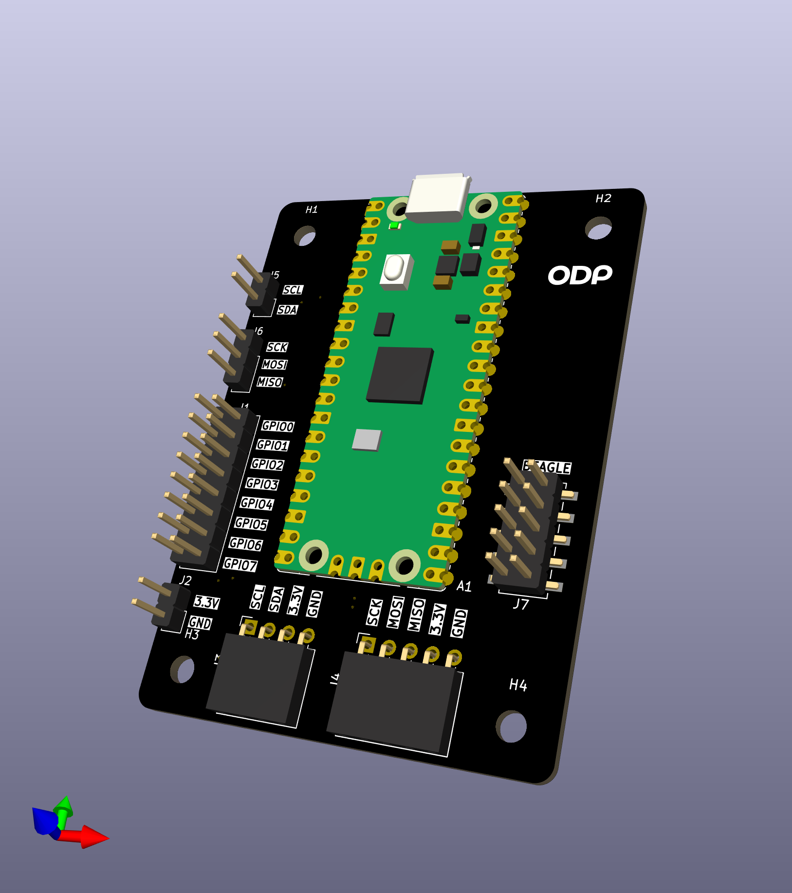
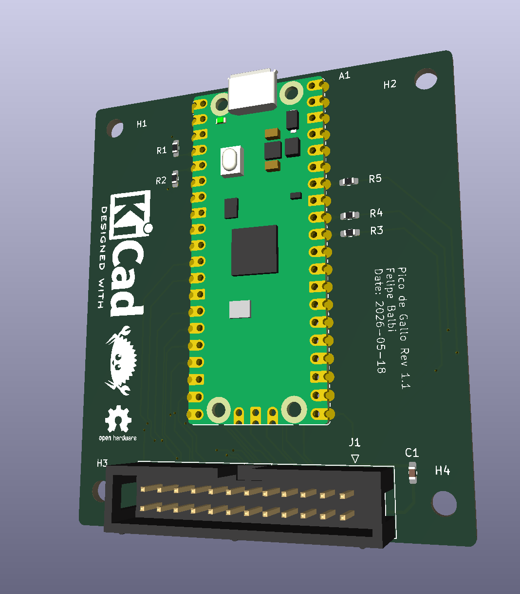
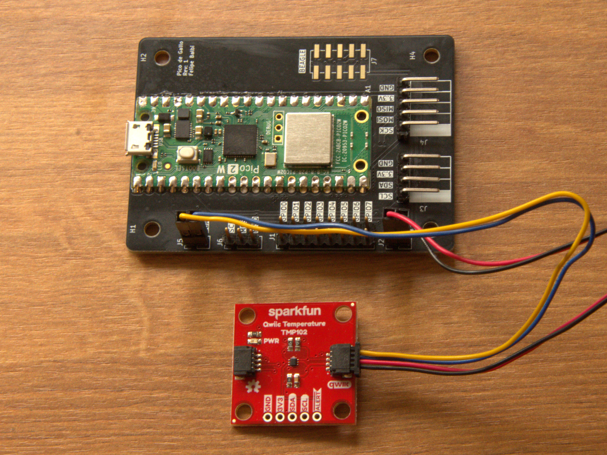

Introduction
Pico de Gallo turns a Raspberry Pi Pico 2 into a USB-attached protocol bridge so you can drive I²C, SPI, UART, GPIO, PWM, ADC, and 1-Wire peripherals from a host PC — and, more importantly, so you can develop and test embedded device drivers on your laptop, with no flashing, no SWD probe, no clock or pin-mux setup, and no linker scripts in your way.
If you’ve ever wanted to:
- prototype a driver against
embedded-haltraits without booting an MCU each time you change a line, - script a sensor or actuator from Python or a shell one-liner,
- write an integration test that talks to real silicon from your CI runner,
then Pico de Gallo is for you.
What’s in the Box
A small landing-board PCB with castellated pads for the Pico 2, a firmware image that speaks postcard-rpc over USB, and a small constellation of host-side crates:
gallo— a CLI for one-off and scripted access to every interface.pico-de-gallo-lib— an async Rust client built onnusbandtokio.pico-de-gallo-hal— a host-sideembedded-hal/embedded-hal-asyncshim so existing drivers work unchanged.pico-de-gallo-ffi— a C shared library with a stable opaque-pointer API.pyco-de-gallo— Python bindings via PyO3 and maturin.
 Pico de Gallo v1.0 |
 Pico de Gallo v1.1 |
Hardware Revisions at a Glance
| Revision | Firmware feature | Connector | Capabilities |
|---|---|---|---|
| v1.0 | hw-rev1 | seven pin headers | I²C, SPI, GPIO, PWM |
| v1.1 | hw-rev2 | one keyed 2×12 box | I²C, SPI, UART, GPIO, PWM, ADC, 1-Wire |
| v2 (WIP) | hw-rev2 | 2×12 box + level Tx | same as v1.1, plus variable VREF |
You’ll want v1.1 or later if you need UART, ADC, or 1-Wire. See Revisions: v1.0 vs v1.1.
How to Read This Book
The book is laid out as six parts plus appendices:
- The Hardware — what’s on the PCB, which revision to pick, how to flash firmware.
- Getting Started — install the toolchain and verify your device.
- The Interfaces — one chapter per peripheral. Each follows the same template: overview, pin mapping, CLI usage, Rust, C, Python, error handling.
- The Crates — reference for each crate in the workspace.
- Writing a Device Driver — the longest part. A TMP102 walkthrough showing the dev loop, the blocking/async parity, and how to write hardware-in-the-loop tests that run on your laptop.
- Under the Hood — the wire protocol, schema versioning, firmware architecture, and the release-please cadence.
Read top-to-bottom for a tour, or jump straight to the chapter you need — each chapter stands on its own.
The Optional Case
A 3D-printable, snap-fit enclosure lives in the
case/
folder of the repository if you want to keep the board safe on your
bench.

Hardware Overview
v1.0 — seven pin headers |
v1.1 — keyed 2×12 box header |
Pico de Gallo is a small landing-board PCB designed to host a Raspberry Pi Pico 2 module via castellated edge pads. The landing board exists for one reason: to make the pin-to-function mapping predictable and labeled, so the firmware always knows where to look for SDA, SCK, UART TX, and friends, and so you don’t have to keep a pinout chart taped to your monitor.
Everything Pico de Gallo can do, a bare Pico 2 with the same firmware can also do — but the landing board adds:
- silkscreened labels for every signal,
- pull-ups for I²C (4.7 kΩ on v1.1+),
- series resistors on ADC inputs (100 Ω on v1.1+),
- decoupling on VREF,
- and a keyed connector so cables only go in one way (v1.1+).
The Pico 2 itself supplies the RP2350 MCU, the USB connector, the BOOTSEL button, and the 3.3 V regulator. Pico de Gallo just brings the right signals to the right places.
Block Diagram
┌──────────────────────────────────────────┐
│ Pico de Gallo PCB │
│ │
USB ────│──► Pico 2 (RP2350) ──► castellated pads ─┼──► I²C / SPI
│ │ │ │ UART / GPIO
│ │ │ │ PWM / ADC
│ │ │ │ 1-Wire
│ │ ▼ │
│ │ pull-ups, series R, │
│ │ decoupling, header(s) │
│ ▼ │
│ defmt RTT (debug) │
└──────────────────────────────────────────┘
What’s on the PCB
| Component | v1.0 | v1.1+ | Purpose |
|---|---|---|---|
| Pico 2 pads | ✓ | ✓ | Castellated landing for the MCU |
| I²C pull-ups | external | 4.7 kΩ | Required for I²C operation |
| ADC series R | — | 100 Ω | Input protection / RC filter |
| VREF decoupling | — | 100 nF | Stabilises ADC reference |
| Pin headers | 7× | — | Per-bus 0.1″ pin headers |
| Box header | — | 1× 2×12 | Single keyed shrouded connector |
| BOOTSEL button | on Pico | on Pico | Boot to UF2 mass-storage mode |
The Three Ways to Get a Board
- Order a fabricated PCB from any house that accepts gerbers
(JLCPCB, PCBWay, OSH Park, Aisler, …). Our gerbers are on the
Releases
page under
hardware-v*tags. Most houses will also assemble the board if you upload the BOM and pick-and-place files; this is the easiest path and we recommend it. - Hand-solder the Pico 2 and headers yourself. The board has no fine-pitch components — it’s a comfortable first SMT-ish project. See Assembly & Flashing.
- Skip the board entirely and wire a bare Pico 2 directly, matching the pinout in Pinout & Connector. The firmware doesn’t care whether the signals come from a landing board or a breadboard.
What’s Next
- Revisions: v1.0 vs v1.1 — pick the right board for what you want to do.
- Pinout & Connector — every pin, every signal, every revision.
- Assembly & Flashing — get the Pico 2 onto the PCB and the firmware onto the Pico 2.
Revisions: v1.0 vs v1.1
The Pico de Gallo PCB has shipped in two revisions, with a third planned. The revision determines two things:
- Which firmware feature flag you flash (
hw-rev1orhw-rev2). - Which peripherals the firmware exposes.
| Revision | Feature flag | Connector | Capabilities |
|---|---|---|---|
| v1.0 | hw-rev1 (default) | 7 separate pin headers | I²C, SPI, GPIO, PWM |
| v1.1 | hw-rev2 | one keyed 2×12 shrouded header | I²C, SPI, UART, GPIO, PWM, ADC, 1-Wire |
| v2 (future) | hw-rev2 | 2×12 shrouded header + level translators | same as v1.1, plus variable VREF rail |
Important
The capability set is enforced by firmware, not by the hardware. Flashing
hw-rev1firmware onto a v1.1 board still gives you only the v1.0 capability set. Match the firmware to the board you actually have.
Which One Should I Pick?
- You only need I²C, SPI, GPIO, or PWM → v1.0 is fine and cheaper to fabricate.
- You need UART, ADC, or 1-Wire → you want v1.1 (or later).
Calling an unsupported endpoint on v1.0 firmware returns
Unsupported. - You’re starting from scratch today → fabricate v1.1. It’s the same effort and a strict superset.
What v1.1 Adds Over v1.0
- Single keyed box header. One cable, one orientation, no ambiguity. Adapter boards (informally called “toppings”) can be designed against a stable connector instead of wrangling seven separate jumper bundles.
- All 20 firmware signals routed. v1.0 only brings out 13 of the firmware’s 20 GPIO signals. UART, SPI chip-select, 1-Wire, and the three ADC inputs are physically absent on v1.0.
- On-board passives.
- 4.7 kΩ pull-ups on I²C (no more dangling resistors).
- 100 Ω series resistors on each ADC input for protection and a mild RC roll-off.
- 100 nF decoupling on VREF.
What v2 Will Add
Planned but not yet released:
- Variable VREF rail on header pin 1: selectable 1.8 V / 3.3 V / 5 V. On v1.1 this pin is hardwired to 3.3 V.
- Level translators on the digital signals so the same board can talk to 1.8 V, 3.3 V, and 5 V peripherals without an external level shifter.
- Same firmware feature flag as v1.1 (
hw-rev2).
Note
Adapter boards designed for the v1.1 box-header pinout will plug into v2 unchanged. On v1.1 they will see 3.3 V on pin 1; on v2 they will see whatever VREF is set to. Design your topping with that in mind.
v1.0 — Best Effort
The v1.0 board predates the consolidated header and lacks routing
for UART (GPIO 0–1), SPI CS (GPIO 5), 1-Wire (GPIO 16), and ADC
(GPIO 26–28). The firmware still validates inputs and returns
Unsupported for those endpoints, so calling them won’t crash —
you just won’t get data.
If you’re stuck on v1.0 and need one of the missing signals, you can solder a wire directly to the corresponding Pico 2 castellated pad. It’s not pretty, but it works.
Identifying Your Board
The fastest way to tell what revision firmware you’re running:
$ gallo version
Pico de Gallo FW v0.8.0
Schema v0.4.0
HW revision 2
Capabilities: I2C ✓ | SPI ✓ | UART ✓ | GPIO ✓ | PWM ✓ | ADC ✓ | 1-Wire ✓
HW revision 1 corresponds to hw-rev1; HW revision 2 to
hw-rev2. The capability line tells you exactly which peripherals
this firmware will serve.
Migrating from v1.0 to v1.1
Code-wise, nothing changes. The wire protocol is the same; the host crates are the same; the CLI is the same. The only thing that moves is which physical pins your peripheral cables plug into — see Pinout & Connector.
If you have driver code that detects capabilities at runtime, use
device_info() (host) / gallo_get_device_info (FFI) and gate on
the capabilities bitfield. That way the same binary works
unmodified on both boards.
Pinout & Connector
This is the authoritative pin map for both PCB revisions. Refer to it whenever you wire up a peripheral.
Firmware Pin Map
The firmware always uses the same RP2350 GPIOs, regardless of which revision PCB they’re routed to.
| Function | RP2350 GPIO | Available on | Notes |
|---|---|---|---|
| UART TX | GPIO 0 | v1.1+ | UART0 TX, buffered |
| UART RX | GPIO 1 | v1.1+ | UART0 RX |
| I²C SDA | GPIO 2 | v1.0+ | I²C1, async DMA |
| I²C SCL | GPIO 3 | v1.0+ | |
| SPI RX (MISO) | GPIO 4 | v1.0+ | SPI0, DMA full-duplex |
| SPI CS | GPIO 5 | v1.1+ | Active-low chip-select |
| SPI SCK | GPIO 6 | v1.0+ | |
| SPI TX (MOSI) | GPIO 7 | v1.0+ | |
| GPIO 0 | GPIO 8 | v1.0+ | User pin, in/out/edge |
| GPIO 1 | GPIO 9 | v1.0+ | User pin, in/out/edge |
| GPIO 2 | GPIO 10 | v1.0+ | User pin, in/out/edge |
| GPIO 3 | GPIO 11 | v1.0+ | User pin, in/out/edge |
| PWM 0 | GPIO 12 | v1.0+ | Slice 6 channel A |
| PWM 1 | GPIO 13 | v1.0+ | Slice 6 channel B |
| PWM 2 | GPIO 14 | v1.0+ | Slice 7 channel A |
| PWM 3 | GPIO 15 | v1.0+ | Slice 7 channel B |
| 1-Wire | GPIO 16 | v1.1+ | PIO0/SM0, open-drain |
| ADC 0 | GPIO 26 | v1.1+ | 12-bit, 0–3.3 V nominal |
| ADC 1 | GPIO 27 | v1.1+ | 12-bit |
| ADC 2 | GPIO 28 | v1.1+ | 12-bit |
The user-facing GPIO numbering in the CLI, library, FFI, and Python
bindings (0–3) maps to RP2350 GPIO 8–11. Same goes for ADC
channels (0–2 → GPIO 26–28) and PWM channels (0–3 → GPIO
12–15).
v1.0 Pin Headers
v1.0 uses seven separate 0.1″ pin headers, one per logical bus. Refer to the silkscreen on the board for the exact layout. Signals not brought out on v1.0: UART TX/RX, SPI CS, 1-Wire, ADC 0–2.
v1.1 Box Header
v1.1 consolidates everything onto a single keyed 2×12 (0.1″ pitch) shrouded box header. Viewed from above with the USB connector pointing up, pin 1 is at the top-right. The shroud key notch faces right. Even-numbered pins (bottom row) are on the left; odd-numbered pins (top row) are on the right.
Pin 2 GND ┃ VREF (+3V3) Pin 1
Pin 4 I2C_SCL ┃ I2C_SDA Pin 3
Pin 6 SPI_MOSI ┃ SPI_MISO Pin 5
Pin 8 SPI_CS ┃ SPI_SCK Pin 7
Pin 10 UART_RX ┃ UART_TX Pin 9
Pin 12 GPIO1 ┃ GPIO0 Pin 11
Pin 14 GPIO3 ┃ GPIO2 Pin 13
Pin 16 PWM1 ┃ PWM0 Pin 15
Pin 18 PWM3 ┃ PWM2 Pin 17
Pin 20 ADC0 ┃ ONEWIRE Pin 19
Pin 22 ADC2 ┃ ADC1 Pin 21
Pin 24 GND ┃ +3V3 Pin 23
Full v1.1 Pinout Table
| Header Pin | Net | RP2350 GPIO | Direction | Notes |
|---|---|---|---|---|
| 1 | VREF | — | Power out | 3.3 V (hardwired on v1.1) |
| 2 | GND | — | Power | Ground |
| 3 | SDA | GPIO 2 | Bidir | I²C1 SDA, 4.7 kΩ pull-up |
| 4 | SCL | GPIO 3 | Bidir | I²C1 SCL, 4.7 kΩ pull-up |
| 5 | SPI_MISO | GPIO 4 | Input | SPI0 RX |
| 6 | SPI_MOSI | GPIO 7 | Output | SPI0 TX |
| 7 | SPI_SCK | GPIO 6 | Output | SPI0 SCK |
| 8 | SPI_CS | GPIO 5 | Output | SPI0 CSn |
| 9 | UART_TX | GPIO 0 | Output | UART0 TX |
| 10 | UART_RX | GPIO 1 | Input | UART0 RX |
| 11 | GPIO0 | GPIO 8 | Bidir | User GPIO 0 |
| 12 | GPIO1 | GPIO 9 | Bidir | User GPIO 1 |
| 13 | GPIO2 | GPIO 10 | Bidir | User GPIO 2 |
| 14 | GPIO3 | GPIO 11 | Bidir | User GPIO 3 |
| 15 | PWM0 | GPIO 12 | Output | PWM slice 6A |
| 16 | PWM1 | GPIO 13 | Output | PWM slice 6B |
| 17 | PWM2 | GPIO 14 | Output | PWM slice 7A |
| 18 | PWM3 | GPIO 15 | Output | PWM slice 7B |
| 19 | ONEWIRE | GPIO 16 | Bidir | PIO0/SM0, open-drain |
| 20 | ADC0 | GPIO 26 | Input | Via 100 Ω series resistor |
| 21 | ADC1 | GPIO 27 | Input | Via 100 Ω series resistor |
| 22 | ADC2 | GPIO 28 | Input | Via 100 Ω series resistor |
| 23 | +3V3 | — | Power out | Direct 3.3 V |
| 24 | GND | — | Power | Ground |
Note
Pin 1 (VREF) is hardwired to 3.3 V on v1.1. On the future v2 board it becomes a switchable rail (1.8 V / 3.3 V / 5 V). Adapter boards designed today against the v1.1 header will see 3.3 V; they’ll continue to plug into v2 with the same key orientation.
Electrical Notes
- All digital I/O is 3.3 V CMOS. Do not drive 5 V signals directly into Pico de Gallo without a level translator.
- The on-board I²C pull-ups (v1.1+) are sized for moderate bus capacitance. For long cables or many devices, add external pull-ups in parallel and treat the on-board value as a minimum.
- The ADC inputs see a 100 Ω series resistor on v1.1+. Keep that in mind for source-impedance budgeting if you care about absolute accuracy.
- 3.3 V and VREF on v1.1 share the Pico 2’s regulator. Don’t pull hundreds of milliamps from the header.
Assembly & Flashing
Getting a working Pico de Gallo on your desk takes two steps:
- Get a populated PCB.
- Flash the firmware.
Step 1 has three options, ordered from easiest to most hands-on. Step 2 is the same regardless of how you got the board.
Step 1: Get a Populated PCB
Option A — Have the PCB house assemble it
Most modern PCB fabrication services (JLCPCB, PCBWay, OSH Park
with their assembly partners, Aisler, etc.) will both fabricate
and assemble the board for you. Upload the gerbers, BOM, and
pick-and-place files from the
hardware-v*
release, choose your solder mask color, and a fully-built board
arrives at your door. This is the recommended path — it’s cheap
at small quantities, and your time is worth more than the
assembly fee.
Note
Pico de Gallo PCB assembly is not affiliated with any specific PCB house. Any cost, mistake, or damage associated with PCB fabrication and assembly is your responsibility.
Option B — Fabricate bare, solder yourself
If you’d rather solder, the board uses through-hole and medium-pitch components only — there’s nothing exotic.
Order of operations:
- Solder the Pico 2 first. It’s the lowest component on the board. Tack one corner pad, check alignment, tack the opposite corner, then run a bead along all remaining pads. A bit of no-clean flux makes this much easier — solder follows flux onto exposed copper.
- Right-angle headers next. Hold them in place with a piece of polyimide (“Kapton”) tape or a third hand, tack one pin, verify the header sits flush, then solder the rest.
- Straight headers last. Same approach — one pin first, check alignment, finish the rest.
- Clean off the flux with 99% IPA and an ESD-safe brush in a well-ventilated area.
Caution
Isopropyl alcohol is flammable. Don’t smoke or have open flames near it. Use it in a well-ventilated area.
After cleanup, eyeball the board for solder bridges between adjacent pins before applying USB power.
Option C — Skip the PCB, wire a bare Pico 2
The firmware works on a bare Pico 2 too. Wire your peripherals directly to the RP2350 GPIOs listed in Pinout & Connector. You’ll need to provide your own I²C pull-ups (4.7 kΩ to 3.3 V on SDA and SCL) if you want I²C to work.
Step 2: Flash the Firmware
The Pico 2 ships with a built-in UF2 bootloader, so you don’t need a programmer, a debug probe, or any extra software. Just a USB cable.
- Download the latest
firmware.uf2from the Releases page (look for a tag likefirmware-v0.8.0). Pick the build that matches your board revision:hw-rev1for the v1.0 boardhw-rev2for the v1.1 board
- With the Pico 2 unplugged, press and hold the
BOOTSELbutton on top of the module. - Plug the USB cable in while still holding
BOOTSEL, then release. - A USB mass-storage drive named
RP2350appears on your host. - Drag-and-drop the
firmware.uf2onto that drive (orcp/Copy-Itemfrom a shell). - The drive vanishes; the Pico 2 reboots into the new firmware automatically.
That’s it — no command-line flashing tool required.
Tip
If the
RP2350drive doesn’t show up, the Pico 2 didn’t enter bootloader mode. Unplug, holdBOOTSEL, plug back in. Don’t releaseBOOTSELuntil you see the drive.
Step 3: Verify
Confirm the firmware is alive by running gallo version. See
Verifying Your Device for the
expected output and what each field means.
When Things Go Wrong
- Drive doesn’t appear in BOOTSEL mode — try a different USB cable (some “charge-only” cables don’t carry data) or a different USB port.
gallocan’t find the device after flashing — on Linux you may need a udev rule; on Windows the WinUSB driver may need to be installed via Zadig. See USB & OS Notes.- You flashed
hw-rev1onto a v1.1 board (or vice versa) — no damage done; just re-enter BOOTSEL and flash the right build.
Installing the Toolchain
To use Pico de Gallo from a host PC, you need the gallo
command-line tool. That’s it — gallo will speak to the firmware
over USB and you don’t need any extra drivers on most platforms.
There are two ways to get it: pre-built binaries (fastest), or building from source.
Option A — Pre-built Binaries
Pre-built binaries are attached to every application-v* release
on the
Releases
page. Supported triples:
| OS | Architectures |
|---|---|
| Linux | x86_64, aarch64 |
| Windows | x86_64, aarch64 |
| macOS | aarch64 |
Download the right archive for your system, unzip, and put gallo
(or gallo.exe) somewhere on your PATH.
$ gallo --version
gallo 0.8.0
Option B — Build from Source
If your platform isn’t in the table above, or you want to live on
main:
- Install Rust (stable toolchain, 1.90 or newer — the workspace pins MSRV to 1.90).
- Clone the repo:
$ git clone https://github.com/OpenDevicePartnership/pico-de-gallo $ cd pico-de-gallo/crates - Build the CLI:
$ cargo build --release -p gallo - The binary lives at
target/release/gallo(orgallo.exeon Windows). Move or symlink it into a directory on yourPATH.
Tip
On Linux you may want to install the
libudevheaders first sonusbbuilds without extra steps:$ sudo apt install libudev-dev pkg-config
Optional Extras
You only need these if you’re working on Pico de Gallo, not just with it:
- The mdBook source for this book lives under
book/. Build withmdbook build book. - The C FFI library (
pico-de-gallo-ffi) builds a.so/.dylib/.dllshared library plus a generatedpico_de_gallo.hheader. Seecrates/ffi.md. - The Python bindings (
pyco-de-gallo) build with maturin:
See$ pip install maturin $ cd crates/pyco-de-gallo $ maturin develop --releasecrates/python.md.
Next
Now verify your device is talking to the host.
Verifying Your Device
Plug the freshly-flashed Pico de Gallo into your host and run:
$ gallo version
Pico de Gallo FW v0.8.0
Schema v0.4.0
HW revision 2
Capabilities: I2C ✓ | SPI ✓ | UART ✓ | GPIO ✓ | PWM ✓ | ADC ✓ | 1-Wire ✓
If you see that block, you’re done. Success 🎉.
What Each Field Means
| Field | What it tells you |
|---|---|
Pico de Gallo FW v... | The firmware semver. Lockstepped with the wire crate via release-please. |
Schema v... | The wire-protocol schema version. The host crate must understand this. |
HW revision | 1 if you flashed hw-rev1 firmware, 2 for hw-rev2. |
Capabilities | Which peripherals this firmware build exposes. A ✗ means the endpoint returns Unsupported. |
Important
The
HW revisionline reflects the firmware build, not the PCB you have. If you flashed the wrong build, re-enter BOOTSEL and flash the right one. See Assembly & Flashing.
Ping
For a quick round-trip sanity check:
$ gallo ping
Ping OK
ping sends a random u32 to the firmware and asserts the echo
matches. If you can ping, USB and the wire protocol are fully
functional.
Listing Multiple Devices
If you have more than one Pico de Gallo connected, gallo list
shows them:
$ gallo list
Serial Number Bus Address
E6633861A34B8C24 2 14
E6633861A34B9F17 1 8
Pick a specific device with -s (or --serial-number):
$ gallo -s E6633861A34B8C24 version
Without -s, gallo uses the first device it finds — which is
non-deterministic if you have more than one plugged in.
Schema Mismatch
If the firmware and your host CLI disagree on the wire protocol,
gallo version will tell you:
$ gallo version
Error: schema mismatch (firmware v0.5.0, host expects v0.4.x)
The fix is to update whichever side is behind. See Releases & Compatibility for the rules on which versions are compatible.
Next
You’re up and running. Pick an interface to play with — start with I²C or GPIO, or skip to Writing a Device Driver for the guided tour.
USB & OS Notes
The Pico de Gallo firmware uses a generic WinUSB-compatible descriptor, so most operating systems pick it up without a custom driver. The notes below cover the cases where you need to nudge the OS.
Linux
Out-of-the-box, libusb (and therefore nusb) requires root to
open arbitrary USB devices. To let your regular user account talk
to Pico de Gallo, drop a udev rule:
# /etc/udev/rules.d/99-pico-de-gallo.rules
SUBSYSTEM=="usb", ATTR{idVendor}=="045e", ATTR{idProduct}=="067d", MODE="0666"
Then reload udev:
$ sudo udevadm control --reload-rules
$ sudo udevadm trigger
Unplug and replug the device. gallo version should now work
without sudo.
Note
The device enumerates with VID
045e(Microsoft) and PID067d, defined by the firmware (MICROSOFT_VID/PICO_DE_GALLO_PIDinpico-de-gallo-internal). They may change across firmware versions, so avoid hard-coding them in long-lived tooling.
Windows
The firmware advertises a Microsoft OS 2.0 descriptor that tells
Windows to bind the WinUSB driver automatically. The first time
you plug in a Pico de Gallo, you may see a brief “installing
device” notification — that’s normal. After that, gallo works
without any extra setup.
If for some reason WinUSB doesn’t bind (e.g., a stale Zadig override, or driver-signing policy on a corporate machine), use Zadig to manually install the WinUSB driver against the Pico de Gallo interface.
macOS
No extra setup. macOS picks the device up automatically.
If gallo list returns nothing, check System Information →
USB and confirm the device enumerates. If it shows up there but
gallo can’t find it, you might have a code-signing issue with a
locally-built gallo binary — try the pre-built release artifact.
Troubleshooting
gallo: device not found— Is the device plugged in? Did you flash firmware? Trygallo list.Permission deniedon Linux — udev rule missing or not reloaded. See above.gallo versionsucceeds butgallo i2c scanhangs — the bus has no pull-ups, or your peripheral is clock-stretching forever. Add 4.7 kΩ pull-ups (v1.0 boards lack them on-board).- Device disappears after a write — likely a brown-out from trying to source too much current through the on-board 3.3 V rail. Power the peripheral externally.
See also: Troubleshooting for the full list.
I²C
Pico de Gallo provides a single I²C bus on the RP2350’s hardware I²C1 controller. SDA is on GPIO 2 and SCL on GPIO 3. The v1.1 PCB includes on-board 4.7 kΩ pull-ups; on v1.0 you must supply your own.
Operations
| Operation | Description |
|---|---|
| Read | Read N bytes from a device at the given address |
| Write | Write bytes to a device at the given address |
| Write-Read | Write then read on the same target (repeated start, no STOP between) |
| Scan | Probe every address on the bus |
| Batch | Send a sequence of read/write ops as a single USB transaction |
| Set Config | Change the bus clock frequency at runtime |
| Get Config | Query the current bus configuration |
Bus Frequencies
| Variant | Value | Standard name |
|---|---|---|
Standard | 100 kHz | I²C Standard mode |
Fast | 400 kHz | I²C Fast mode |
FastPlus | 1 MHz | I²C Fast-mode Plus |
The firmware defaults to Standard mode.
CLI
$ gallo i2c help
I2C access methods
Commands:
scan Scan I2C bus for existing devices
read Read bytes through the I2C bus from device at given address
write Write bytes through I2C bus to device at given address
write-read Write bytes followed by read bytes
set-config Set I2C bus configuration (frequency)
get-config Get current I2C bus configuration
batch Execute multiple I2C operations in a single transfer
Scanning
Warning
The RP235x I²C controller doesn’t expose a pure address-probe primitive, so
gallo i2c scandoes a 1-byte read at each address. Devices that ACK a read are reported as present. A handful of peripherals may end up in an unexpected state after being probed this way — usually a power cycle clears it.
$ gallo i2c scan
╭────┬────┬────┬────┬────┬────┬────┬────┬────┬────┬────┬────┬────┬────┬────┬────┬────╮
│ │ 0 │ 1 │ 2 │ 3 │ 4 │ 5 │ 6 │ 7 │ 8 │ 9 │ a │ b │ c │ d │ e │ f │
├────┼────┼────┼────┼────┼────┼────┼────┼────┼────┼────┼────┼────┼────┼────┼────┼────┤
│ 0 │ RR │ RR │ RR │ RR │ RR │ RR │ RR │ RR │ -- │ -- │ -- │ -- │ -- │ -- │ -- │ -- │
│ 1 │ -- │ -- │ -- │ -- │ -- │ -- │ -- │ -- │ -- │ -- │ -- │ -- │ -- │ -- │ -- │ -- │
│ 2 │ -- │ -- │ -- │ -- │ -- │ -- │ -- │ -- │ -- │ -- │ -- │ -- │ -- │ -- │ -- │ -- │
│ 3 │ -- │ -- │ -- │ -- │ -- │ -- │ -- │ -- │ -- │ -- │ -- │ -- │ -- │ -- │ -- │ -- │
│ 4 │ -- │ -- │ -- │ -- │ -- │ -- │ -- │ -- │ 48 │ -- │ -- │ -- │ -- │ -- │ -- │ -- │
│ 5 │ -- │ -- │ -- │ -- │ -- │ -- │ -- │ -- │ -- │ -- │ -- │ -- │ -- │ -- │ -- │ -- │
│ 6 │ -- │ -- │ -- │ -- │ -- │ -- │ -- │ -- │ 68 │ -- │ -- │ -- │ -- │ -- │ -- │ -- │
│ 7 │ -- │ -- │ -- │ -- │ -- │ -- │ -- │ -- │ RR │ RR │ RR │ RR │ RR │ RR │ RR │ RR │
╰────┴────┴────┴────┴────┴────┴────┴────┴────┴────┴────┴────┴────┴────┴────┴────┴────╯
RR marks reserved I²C addresses. Pass -r (--include-reserved)
to probe them anyway.
Read / Write / Write-Read
$ gallo i2c read --address 0x48 --count 2
6b 15
$ gallo i2c write --address 0x48 --bytes 0x01 0xe0 0xa0
$ gallo i2c write-read --address 0x48 --bytes 0x00 --count 2
6b 15
Read output supports -f hex (default), -f binary, and
-f ascii.
Config
$ gallo i2c set-config --frequency fast
$ gallo i2c get-config
Frequency: Fast (400 kHz)
Batch
A single USB round-trip for a multi-op transaction:
$ gallo i2c batch -a 0x48 --op write:0x00 --op read:2
Read data (2 bytes):
0000: 19 80 ..
See Transaction Batching for the full mechanism.
Rust Library
All PicoDeGallo methods are async. PicoDeGallo::new() is
not async.
use pico_de_gallo_lib::{I2cBatchOp, I2cFrequency, PicoDeGallo};
#[tokio::main]
async fn main() -> Result<(), Box<dyn std::error::Error>> {
let pg = PicoDeGallo::new();
pg.i2c_set_config(I2cFrequency::Fast).await?;
// Plain write-read
let data = pg.i2c_write_read(0x48, &[0x00], 2).await?;
let raw = u16::from_be_bytes([data[0], data[1]]);
println!("raw = 0x{raw:04x}");
// Same transaction, batched
let ops = [
I2cBatchOp::Write { data: &[0x00] },
I2cBatchOp::Read { len: 2 },
];
let _ = pg.i2c_batch(0x48, &ops).await?;
Ok(())
}HAL
The HAL exposes the bus as an
[embedded_hal::i2c::I2c] / [embedded_hal_async::i2c::I2c]
implementor — so any driver written against those traits Just
Works:
#![allow(unused)]
fn main() {
use embedded_hal::i2c::I2c;
use pico_de_gallo_hal::Hal;
fn read_tmp102(hal: &Hal) {
let mut i2c = hal.i2c();
let mut buf = [0u8; 2];
i2c.write_read(0x48, &[0x00], &mut buf).unwrap();
let raw = u16::from_be_bytes(buf);
let celsius = (raw >> 4) as f32 * 0.0625;
println!("Temperature: {celsius:.2} °C");
}
}I2c::transaction() is automatically batched into a single USB
round-trip — see Transaction Batching.
C (FFI)
#include "pico_de_gallo.h"
#include <stdio.h>
void read_tmp102(PicoDeGallo *gallo) {
uint8_t tx[] = {0x00};
uint8_t rx[2];
Status s = gallo_i2c_write_read(gallo, 0x48, tx, 1, rx, 2);
if (s != Ok) { fprintf(stderr, "write-read failed: %d\n", s); return; }
uint16_t raw = ((uint16_t)rx[0] << 8) | rx[1];
printf("raw = 0x%04x\n", raw);
}
I²C frequency is passed as uint8_t: 0 = Standard, 1 = Fast,
2 = FastPlus. See crates/ffi.md.
Python
from pyco_de_gallo import PycoDeGallo, I2cFrequency
pg = PycoDeGallo()
pg.i2c_set_config(I2cFrequency.Fast)
data = pg.i2c_write_read(0x48, [0x00], 2)
raw = (data[0] << 8) | data[1]
print(f"raw = 0x{raw:04x}")
Error Handling
I²C operations return PicoDeGalloError<I2cError> on the Rust
side; FFI returns negative Status values:
| Variant | Meaning |
|---|---|
Nack | Target did not acknowledge |
BusError | I²C bus protocol error |
ArbitrationLoss | Lost arbitration to another master |
Overrun | Data overrun on read |
BufferTooLong | Request exceeds firmware buffer limit |
AddressOutOfRange | Address outside the 7-bit range |
Unsupported | Returned by firmware builds without I²C |
Other | Catch-all |
The full status-code mapping for FFI lives in
appendix/status-codes.md.
SPI
Pico de Gallo drives the RP2350’s SPI0 controller in DMA-backed full-duplex mode.
| Signal | RP2350 GPIO | Available on |
|---|---|---|
| SCK | GPIO 6 | v1.0+ |
| MOSI (TX) | GPIO 7 | v1.0+ |
| MISO (RX) | GPIO 4 | v1.0+ |
| CS | GPIO 5 | v1.1+ |
Note
On v1.0 the dedicated CS line isn’t routed to any header. You can still drive chip-select from any of the user GPIO pins (0–3) via the
spi_device(cs_pin)HAL accessor or by toggling a GPIO manually around the SPI ops.
Operations
| Operation | Description |
|---|---|
| Read | Clock in N bytes (MISO only) |
| Write | Clock out bytes (MOSI only) |
| Transfer | Full-duplex: simultaneous TX and RX |
| Flush | Wait for any in-flight transactions to complete |
| Batch | Sequence of ops under a single chip-select |
| Set Config | Change frequency / CPHA / CPOL at runtime |
| Get Config | Query the current configuration |
SPI Mode
SPI mode is the (CPOL, CPHA) tuple. Mode is set via
set-config / spi_set_config():
| Mode | CPOL | CPHA | Idle clock | Sample edge |
|---|---|---|---|---|
| 0 | 0 | 0 | low | rising |
| 1 | 0 | 1 | low | falling |
| 2 | 1 | 0 | high | falling |
| 3 | 1 | 1 | high | rising |
The firmware defaults to mode 0.
CLI
$ gallo spi help
SPI access methods
Commands:
read Read bytes through SPI bus
write Write bytes through SPI bus
transfer Full-duplex SPI transfer
write-read Write bytes followed by read bytes
set-config Set SPI bus configuration (frequency, phase, polarity)
get-config Get current SPI bus configuration
batch Execute multiple SPI operations atomically under chip-select
Read / Write / Transfer
$ gallo spi read --count 4
00 00 00 00
$ gallo spi write --bytes 0x9f
$ gallo spi transfer --bytes 0x01 0x02 0x03 0x04
00 00 00 00
transfer clocks out the given bytes on MOSI and simultaneously
clocks in the same number of bytes on MISO — true full-duplex.
Config
$ gallo spi set-config --frequency 1000000 --phase 0 --polarity 0
$ gallo spi get-config
Frequency: 1000000 Hz, CPHA: 0, CPOL: 0
Batch (Atomic Under CS)
A single transaction with chip-select held low for the duration:
$ gallo spi batch --cs 0 --op write:0x9f --op read:3
Read data (3 bytes):
0000: ef 40 18 .@.
The --cs flag picks which user GPIO (0–3) drives chip-select.
See Transaction Batching.
Rust Library
use pico_de_gallo_lib::{PicoDeGallo, SpiBatchOp, SpiPhase, SpiPolarity};
#[tokio::main]
async fn main() -> Result<(), Box<dyn std::error::Error>> {
let pg = PicoDeGallo::new();
pg.spi_set_config(1_000_000, SpiPhase::Mode0, SpiPolarity::Low).await?;
// Read JEDEC ID under CS on GPIO 0
let ops = [
SpiBatchOp::Write { data: &[0x9F] },
SpiBatchOp::Read { len: 3 },
];
let result = pg.spi_batch(0, &ops).await?;
println!(
"JEDEC: mfr=0x{:02x} type=0x{:02x} cap=0x{:02x}",
result[0], result[1], result[2]
);
Ok(())
}HAL
The HAL provides two flavours of SPI access:
hal.spi()— a rawembedded_hal::spi::SpiBus/embedded_hal_async::spi::SpiBusimplementor. You manage chip-select yourself.hal.spi_device(cs_pin)— anSpiDevicethat automatically drives the given GPIO as chip-select around every transaction.
#![allow(unused)]
fn main() {
use embedded_hal::spi::{Operation, SpiDevice};
use pico_de_gallo_hal::Hal;
fn read_jedec(hal: &Hal) -> [u8; 3] {
let mut spi = hal.spi_device(0);
let mut id = [0u8; 3];
// One transaction; CS asserted for the whole thing; batched into
// one USB round-trip transparently.
spi.transaction(&mut [
Operation::Write(&[0x9F]),
Operation::Read(&mut id),
])
.unwrap();
id
}
}C (FFI)
#include "pico_de_gallo.h"
#include <stdio.h>
void read_jedec(PicoDeGallo *gallo) {
/* mode 0, 1 MHz */
gallo_spi_set_config(gallo, 1000000, /*phase=*/false, /*polarity=*/false);
uint8_t cmd[] = {0x9F};
gallo_spi_write(gallo, cmd, 1);
uint8_t id[3];
gallo_spi_read(gallo, id, sizeof(id));
printf("JEDEC: %02x %02x %02x\n", id[0], id[1], id[2]);
}
For atomic chip-select transactions, batch operations are
available — see the gallo_spi_batch_* family in the generated
pico_de_gallo.h.
Python
from pyco_de_gallo import PycoDeGallo, SpiPhase, SpiPolarity
pg = PycoDeGallo()
pg.spi_set_config(1_000_000, SpiPhase.Mode0, SpiPolarity.Low)
pg.spi_write(bytes([0x9F]))
id_bytes = pg.spi_read(3)
print("JEDEC:", id_bytes.hex())
Error Handling
| Variant | Meaning |
|---|---|
BufferTooLong | Request exceeds firmware buffer limit |
Unsupported | Returned by firmware builds without SPI |
Other | Catch-all for firmware-reported SPI failure |
See appendix/status-codes.md for
the FFI mapping.
UART
Hardware revision note: UART requires hw-rev2 firmware. On v1 hardware, UART endpoints return
UartError::Unsupported.
Pico de Gallo provides UART support through the RP2350’s hardware UART0 peripheral. The TX pin is on GPIO 0 and RX is on GPIO 1. The UART is buffered and interrupt-driven, so reads and writes do not block the firmware’s main loop.
Operations
| Operation | Description |
|---|---|
| Read | Reads up to N bytes from the receive buffer with an optional timeout |
| Write | Writes raw bytes to the transmit buffer |
| Flush | Flushes the transmit buffer, blocking until all bytes are sent |
| Set Config | Updates the baud rate (and future line parameters) |
| Get Config | Returns the current UART configuration |
Loopback Example
The simplest way to verify UART operation is a loopback test: connect GPIO 0 (TX) directly to GPIO 1 (RX) with a jumper wire. Everything you write will be received back.
CLI
# 1. Check the current configuration
gallo uart get-config
# 2. Set baud rate to 115200 (default)
gallo uart set-config --baud-rate 115200
# 3. Write "Hello" (ASCII bytes)
gallo uart write --bytes 0x48 0x65 0x6C 0x6C 0x6F
# 4. Read back 5 bytes with a 100ms timeout
gallo uart read --count 5 --timeout 100
# 5. Flush the transmit buffer
gallo uart flush
Rust Library
#![allow(unused)]
fn main() {
use pico_de_gallo_lib::PicoDeGallo;
async fn uart_loopback(gallo: &PicoDeGallo) {
// Configure baud rate
gallo.uart_set_config(115_200).await.unwrap();
// Verify configuration
let config = gallo.uart_get_config().await.unwrap();
println!("Baud rate: {}", config.baud_rate);
// Write "Hello"
gallo.uart_write(&[0x48, 0x65, 0x6C, 0x6C, 0x6F]).await.unwrap();
// Flush to ensure all bytes are transmitted
gallo.uart_flush().await.unwrap();
// Read back with 100ms timeout
let data = gallo.uart_read(5, 100).await.unwrap();
assert_eq!(&data, &[0x48, 0x65, 0x6C, 0x6C, 0x6F]);
println!("Received: {:?}", String::from_utf8_lossy(&data));
}
}C (FFI)
#include "pico_de_gallo.h"
#include <stdio.h>
#include <string.h>
void uart_loopback(PicoDeGallo *gallo) {
/* Configure baud rate */
GalloStatus rc = gallo_uart_set_config(gallo, 115200);
if (rc != GALLO_STATUS_OK) {
fprintf(stderr, "set-config failed: %d\n", rc);
return;
}
/* Read back current config */
GalloUartConfigurationInfo info;
rc = gallo_uart_get_config(gallo, &info);
if (rc != GALLO_STATUS_OK) {
fprintf(stderr, "get-config failed: %d\n", rc);
return;
}
printf("Baud rate: %u\n", info.baud_rate);
/* Write "Hello" */
uint8_t tx[] = {0x48, 0x65, 0x6C, 0x6C, 0x6F};
rc = gallo_uart_write(gallo, tx, sizeof(tx));
if (rc != GALLO_STATUS_OK) {
fprintf(stderr, "write failed: %d\n", rc);
return;
}
/* Flush */
gallo_uart_flush(gallo);
/* Read back */
uint8_t rx[5];
uint16_t out_read;
rc = gallo_uart_read(gallo, rx, sizeof(rx), 100, &out_read);
if (rc != GALLO_STATUS_OK) {
fprintf(stderr, "read failed: %d\n", rc);
return;
}
printf("Received %u bytes: %.*s\n", out_read, out_read, rx);
}
HAL
The HAL layer implements the standard embedded_io and embedded_io_async
traits, so the UART can be used with any driver that accepts generic
readers or writers.
Blocking — embedded_io::Read + embedded_io::Write:
#![allow(unused)]
fn main() {
use embedded_io::{Read, Write};
use pico_de_gallo_hal::Hal;
fn uart_loopback_blocking(hal: &Hal) {
let mut uart = hal.uart();
// Write "Hello"
uart.write_all(&[0x48, 0x65, 0x6C, 0x6C, 0x6F]).unwrap();
uart.flush().unwrap();
// Read back
let mut buf = [0u8; 5];
uart.read_exact(&mut buf).unwrap();
assert_eq!(&buf, b"Hello");
}
}Async — embedded_io_async::Read + embedded_io_async::Write:
#![allow(unused)]
fn main() {
use embedded_io_async::{Read, Write};
use pico_de_gallo_hal::Hal;
async fn uart_loopback_async(hal: &Hal) {
let mut uart = hal.uart_async();
uart.write_all(&[0x48, 0x65, 0x6C, 0x6C, 0x6F]).await.unwrap();
uart.flush().await.unwrap();
let mut buf = [0u8; 5];
uart.read_exact(&mut buf).await.unwrap();
assert_eq!(&buf, b"Hello");
}
}Connecting an External Device
To communicate with an external UART device (e.g., a GPS module or microcontroller), connect:
Pico de Gallo External Device
────────────── ───────────────
GPIO 0 (TX) ────────── RX
GPIO 1 (RX) ────────── TX
GND ────────────────── GND
Note
Cross the TX/RX lines: the transmit pin of one device connects to the receive pin of the other.
Non-blocking Read
A timeout of 0 performs a non-blocking read — it returns immediately with whatever bytes are already in the receive buffer (possibly none):
# Non-blocking: return whatever is buffered right now
gallo uart read --count 64 --timeout 0
#![allow(unused)]
fn main() {
use pico_de_gallo_lib::PicoDeGallo;
async fn drain_buffer(gallo: &PicoDeGallo) -> Vec<u8> {
// timeout_ms = 0 → non-blocking
gallo.uart_read(64, 0).await.unwrap()
}
}Error Handling
UART operations return PicoDeGalloError<UartError> on failure. The
UartError variants cover both protocol-level and configuration errors:
| Variant | Description |
|---|---|
BufferTooLong | Requested read/write exceeds the firmware buffer size |
Overrun | Receive buffer overflowed before host read the data |
Break | Break condition detected on the line |
Parity | Parity check failed |
Framing | Invalid stop bit detected |
InvalidBaudRate | Requested baud rate is out of range or unsupported |
Other | Catch-all for unexpected firmware errors |
API Reference
Lib Methods
All methods are async and available on PicoDeGallo:
| Method | Signature |
|---|---|
uart_read | uart_read(count: u16, timeout_ms: u32) -> Result<Vec<u8>, PicoDeGalloError<UartError>> |
uart_write | uart_write(contents: &[u8]) -> Result<(), PicoDeGalloError<UartError>> |
uart_flush | uart_flush() -> Result<(), PicoDeGalloError<UartError>> |
uart_set_config | uart_set_config(baud_rate: u32) -> Result<(), PicoDeGalloError<UartError>> |
uart_get_config | uart_get_config() -> Result<UartConfigurationInfo, PicoDeGalloError<UartError>> |
Note
PicoDeGallo::new()is not async. Only the peripheral methods listed above are async.
FFI Functions
All FFI functions return a GalloStatus code:
GalloStatus gallo_uart_read(PicoDeGallo *gallo,
uint8_t *buf, uint16_t buf_len,
uint32_t timeout_ms, uint16_t *out_read);
GalloStatus gallo_uart_write(PicoDeGallo *gallo,
const uint8_t *buf, uint16_t len);
GalloStatus gallo_uart_flush(PicoDeGallo *gallo);
GalloStatus gallo_uart_set_config(PicoDeGallo *gallo, uint32_t baud_rate);
GalloStatus gallo_uart_get_config(PicoDeGallo *gallo,
GalloUartConfigurationInfo *out_info);
CLI Commands
gallo uart read --count <N> --timeout <MS>
gallo uart write --bytes <BYTE>...
gallo uart flush
gallo uart set-config --baud-rate <RATE>
gallo uart get-config
Pin Mapping
| Function | GPIO | RP2350 Peripheral |
|---|---|---|
| TX | 0 | UART0 TX |
| RX | 1 | UART0 RX |
GPIO
Pico de Gallo exposes 4 general-purpose I/O pins (GPIO 0–3) mapped to RP2350 GPIO 8–11.
Pin Mapping
| Gallo Pin | RP2350 GPIO |
|---|---|
| 0 | 8 |
| 1 | 9 |
| 2 | 10 |
| 3 | 11 |
Operations
| Operation | Description |
|---|---|
| Get | Read the current pin state (High or Low) |
| Put | Drive a pin High or Low |
| Set Config | Configure pin direction (input/output) and pull resistor (none/up/down) |
| Monitor | Subscribe to edge events on a pin (rising, falling, or any) |
Pin Configuration
Before using a GPIO pin, configure its direction and pull resistor. Pins default to input with no pull resistor after power-on.
CLI
# Configure pin 0 as input with pull-up
gallo gpio set-config --pin 0 --direction input --pull up
# Configure pin 2 as output with no pull
gallo gpio set-config --pin 2 --direction output --pull none
Rust Library
#![allow(unused)]
fn main() {
use pico_de_gallo_lib::{PicoDeGallo, GpioDirection, GpioPull};
fn configure_pins(gallo: &PicoDeGallo) {
// Configure pin 0 as input with pull-up
smol::block_on(async {
gallo
.gpio_set_config(0, GpioDirection::Input, GpioPull::Up)
.await
.unwrap();
// Configure pin 2 as output with no pull
gallo
.gpio_set_config(2, GpioDirection::Output, GpioPull::None)
.await
.unwrap();
});
}
}C (FFI)
#include "pico_de_gallo.h"
void configure_pins(PicoDeGallo *gallo) {
/* Configure pin 0 as input with pull-up */
GalloStatus rc = gallo_gpio_set_config(
gallo, 0, GpioDirection_Input, GpioPull_Up
);
if (rc != GalloStatus_Ok) {
fprintf(stderr, "set-config failed: %d\n", rc);
}
/* Configure pin 2 as output with no pull */
gallo_gpio_set_config(gallo, 2, GpioDirection_Output, GpioPull_None);
}
Reading and Writing Pins
CLI
# Read the state of pin 0
gallo gpio get --pin 0
# Output: Pin 0: High
# Drive pin 2 high
gallo gpio put --pin 2 --high
# Drive pin 2 low
gallo gpio put --pin 2 --high false
Rust Library
#![allow(unused)]
fn main() {
use pico_de_gallo_lib::{PicoDeGallo, GpioState};
async fn read_write(gallo: &PicoDeGallo) {
// Read pin 0
let state = gallo.gpio_get(0).await.unwrap();
println!("Pin 0 is {:?}", state);
// Drive pin 2 high
gallo.gpio_put(2, GpioState::High).await.unwrap();
// Drive pin 2 low
gallo.gpio_put(2, GpioState::Low).await.unwrap();
}
}C (FFI)
#include "pico_de_gallo.h"
#include <stdio.h>
void read_write(PicoDeGallo *gallo) {
/* Read pin 0 */
bool high;
GalloStatus rc = gallo_gpio_get(gallo, 0, &high);
if (rc == GalloStatus_Ok) {
printf("Pin 0: %s\n", high ? "High" : "Low");
}
/* Drive pin 2 high */
gallo_gpio_put(gallo, 2, true);
/* Drive pin 2 low */
gallo_gpio_put(gallo, 2, false);
}
Waiting for Pin State Changes
The library provides async methods that block until a pin reaches the requested state or edge transition. These are useful for waiting on external signals without polling.
Rust Library
#![allow(unused)]
fn main() {
use pico_de_gallo_lib::PicoDeGallo;
async fn wait_for_button(gallo: &PicoDeGallo) {
// Wait until pin 1 goes high
gallo.gpio_wait_for_high(1).await.unwrap();
println!("Pin 1 is now high");
// Wait until pin 1 goes low
gallo.gpio_wait_for_low(1).await.unwrap();
println!("Pin 1 is now low");
// Wait for a rising edge on pin 1
gallo.gpio_wait_for_rising_edge(1).await.unwrap();
println!("Rising edge detected on pin 1");
// Wait for a falling edge on pin 1
gallo.gpio_wait_for_falling_edge(1).await.unwrap();
println!("Falling edge detected on pin 1");
// Wait for any edge on pin 1
gallo.gpio_wait_for_any_edge(1).await.unwrap();
println!("Edge detected on pin 1");
}
}C (FFI)
#include "pico_de_gallo.h"
#include <stdio.h>
void wait_for_button(PicoDeGallo *gallo) {
/* These calls block until the requested edge/state occurs */
gallo_gpio_wait_for_high(gallo, 1);
printf("Pin 1 is now high\n");
gallo_gpio_wait_for_low(gallo, 1);
printf("Pin 1 is now low\n");
gallo_gpio_wait_for_rising_edge(gallo, 1);
printf("Rising edge detected on pin 1\n");
gallo_gpio_wait_for_falling_edge(gallo, 1);
printf("Falling edge detected on pin 1\n");
gallo_gpio_wait_for_any_edge(gallo, 1);
printf("Edge detected on pin 1\n");
}
Edge Event Monitoring
For continuous monitoring, subscribe to GPIO edge events on a pin. The
firmware streams GpioEvent structs to the host whenever the subscribed
edge is detected. Each event carries:
pub struct GpioEvent {
pub pin: u8,
pub edge: GpioEdge,
pub state: GpioState,
pub timestamp_us: u64,
}pin— the Gallo pin number (0–3)edge— the edge that triggered the event (RisingorFalling)state— the pin state after the edgetimestamp_us— firmware timestamp in microseconds
CLI
The monitor subcommand subscribes to edge events and prints them until
you press Ctrl+C:
# Monitor rising edges on pin 0
gallo gpio monitor --pin 0 --edge rising
# Monitor any edge on pin 1
gallo gpio monitor --pin 1 --edge any
Example output:
[ 12345 µs] Pin 0: Rising → High
[ 12890 µs] Pin 0: Rising → High
[ 45012 µs] Pin 0: Rising → High
^C
Unsubscribed from pin 0.
Rust Library
#![allow(unused)]
fn main() {
use pico_de_gallo_lib::{PicoDeGallo, GpioEdge};
async fn monitor_pin(gallo: &PicoDeGallo) {
// Subscribe to rising edges on pin 0
gallo.gpio_subscribe(0, GpioEdge::Rising).await.unwrap();
// Open a subscription to receive GpioEvent values (buffer depth 16)
let mut sub = gallo.subscribe_gpio_events(16).await.unwrap();
// Process events
for _ in 0..100 {
let event = sub.recv().await.unwrap();
println!(
"[{:>8} µs] Pin {}: {:?} → {:?}",
event.timestamp_us, event.pin, event.edge, event.state
);
}
// Unsubscribe when done
gallo.gpio_unsubscribe(0).await.unwrap();
}
}C (FFI)
#include "pico_de_gallo.h"
#include <stdio.h>
void monitor_pin(PicoDeGallo *gallo) {
/* Subscribe to rising edges on pin 0 */
gallo_gpio_subscribe(gallo, 0, GpioEdge_Rising);
/* ... receive events via topic subscription API ... */
/* Unsubscribe when done */
gallo_gpio_unsubscribe(gallo, 0);
}
HAL Usage
The pico-de-gallo-hal crate implements the standard embedded-hal
traits over the GPIO pins, providing a familiar interface for portable
device drivers.
Blocking Traits
The HAL implements these blocking traits from embedded-hal:
OutputPin—set_high()/set_low()InputPin—is_high()/is_low()StatefulOutputPin—is_set_high()/is_set_low()
#![allow(unused)]
fn main() {
use embedded_hal::digital::{InputPin, OutputPin, StatefulOutputPin};
use pico_de_gallo_hal::Hal;
fn blink_and_read(hal: &Hal) {
let mut led = hal.output_pin(2);
let button = hal.input_pin(0);
// Drive pin 2 high
led.set_high().unwrap();
// Read pin 0
if button.is_high().unwrap() {
println!("Button pressed");
}
// Check what we're currently driving
if led.is_set_high().unwrap() {
println!("LED is on");
}
led.set_low().unwrap();
}
}Async Trait
The HAL implements the embedded-hal-async Wait trait for
non-blocking edge/level detection:
#![allow(unused)]
fn main() {
use embedded_hal_async::digital::Wait;
use pico_de_gallo_hal::Hal;
async fn wait_for_signal(hal: &Hal) {
let mut pin = hal.input_pin(1);
pin.wait_for_high().await.unwrap();
println!("Pin went high");
pin.wait_for_rising_edge().await.unwrap();
println!("Rising edge detected");
}
}Complete Example: Button-Controlled LED
This example configures pin 0 as an input (button with pull-up) and pin 2 as an output (LED). It toggles the LED on each button press.
CLI
# Configure pins
gallo gpio set-config --pin 0 --direction input --pull up
gallo gpio set-config --pin 2 --direction output --pull none
# Read button, toggle LED manually
STATE=$(gallo gpio get --pin 0)
gallo gpio put --pin 2 --high
# Or monitor button presses
gallo gpio monitor --pin 0 --edge falling
Rust Library
#![allow(unused)]
fn main() {
use pico_de_gallo_lib::{
PicoDeGallo, GpioDirection, GpioPull, GpioState, GpioEdge,
PicoDeGalloError, GpioError,
};
async fn button_led() -> Result<(), PicoDeGalloError<GpioError>> {
let gallo = PicoDeGallo::new();
// Configure pin 0 as input with pull-up (button)
gallo.gpio_set_config(0, GpioDirection::Input, GpioPull::Up).await?;
// Configure pin 2 as output (LED)
gallo.gpio_set_config(2, GpioDirection::Output, GpioPull::None).await?;
let mut led_on = false;
loop {
// Wait for button press (falling edge because of pull-up)
gallo.gpio_wait_for_falling_edge(0).await?;
led_on = !led_on;
let state = if led_on { GpioState::High } else { GpioState::Low };
gallo.gpio_put(2, state).await?;
}
}
}C (FFI)
#include "pico_de_gallo.h"
#include <stdbool.h>
int button_led(void) {
PicoDeGallo *gallo = gallo_new();
if (!gallo) return -1;
/* Configure pin 0 as input with pull-up (button) */
gallo_gpio_set_config(gallo, 0, GpioDirection_Input, GpioPull_Up);
/* Configure pin 2 as output (LED) */
gallo_gpio_set_config(gallo, 2, GpioDirection_Output, GpioPull_None);
bool led_on = false;
for (;;) {
/* Wait for button press (falling edge) */
gallo_gpio_wait_for_falling_edge(gallo, 0);
led_on = !led_on;
gallo_gpio_put(gallo, 2, led_on);
}
return 0;
}
Error Handling
All GPIO operations return errors through the standard PicoDeGalloError
wrapper. GPIO-specific errors are represented as
PicoDeGalloError<GpioError>:
#![allow(unused)]
fn main() {
use pico_de_gallo_lib::{PicoDeGallo, PicoDeGalloError, GpioError, GpioState};
async fn safe_read(gallo: &PicoDeGallo) {
match gallo.gpio_get(0).await {
Ok(state) => println!("Pin 0: {:?}", state),
Err(PicoDeGalloError::Rpc(e)) => {
eprintln!("RPC error: {e:?}");
}
Err(PicoDeGalloError::Endpoint(gpio_err)) => {
eprintln!("GPIO error: {gpio_err:?}");
}
Err(e) => {
eprintln!("Other error: {e:?}");
}
}
}
}API Reference
Lib Methods
All methods are async and available on PicoDeGallo:
| Method | Returns | Description |
|---|---|---|
gpio_get(pin: u8) | Result<GpioState, ...> | Read pin state |
gpio_put(pin: u8, state: GpioState) | Result<(), ...> | Set pin state |
gpio_set_config(pin, direction, pull) | Result<(), ...> | Configure direction and pull |
gpio_wait_for_high(pin: u8) | Result<(), ...> | Wait until pin is high |
gpio_wait_for_low(pin: u8) | Result<(), ...> | Wait until pin is low |
gpio_wait_for_rising_edge(pin: u8) | Result<(), ...> | Wait for low→high transition |
gpio_wait_for_falling_edge(pin: u8) | Result<(), ...> | Wait for high→low transition |
gpio_wait_for_any_edge(pin: u8) | Result<(), ...> | Wait for any transition |
gpio_subscribe(pin: u8, edge: GpioEdge) | Result<(), ...> | Subscribe to edge events on a pin |
gpio_unsubscribe(pin: u8) | Result<(), ...> | Unsubscribe from edge events |
subscribe_gpio_events(depth) | Result<Subscription<GpioEvent>, ...> | Open a subscription to receive GPIO events |
FFI Functions
All functions return GalloStatus:
| Function | Description |
|---|---|
gallo_gpio_get(gallo, pin, out_high) | Read pin state into *out_high |
gallo_gpio_put(gallo, pin, high) | Set pin state |
gallo_gpio_set_config(gallo, pin, direction, pull) | Configure direction and pull |
gallo_gpio_wait_for_high(gallo, pin) | Block until pin is high |
gallo_gpio_wait_for_low(gallo, pin) | Block until pin is low |
gallo_gpio_wait_for_rising_edge(gallo, pin) | Block until rising edge |
gallo_gpio_wait_for_falling_edge(gallo, pin) | Block until falling edge |
gallo_gpio_wait_for_any_edge(gallo, pin) | Block until any edge |
gallo_gpio_subscribe(gallo, pin, edge) | Subscribe to edge events |
gallo_gpio_unsubscribe(gallo, pin) | Unsubscribe from edge events |
CLI Commands
| Command | Description |
|---|---|
gallo gpio get --pin N | Read pin state |
gallo gpio put --pin N --high | Drive pin high |
gallo gpio put --pin N --high false | Drive pin low |
gallo gpio set-config --pin N --direction DIR --pull PULL | Configure pin |
gallo gpio monitor --pin N --edge EDGE | Stream edge events until Ctrl+C |
Limitations
- 4 pins only — GPIO 0–3 (RP2350 GPIO 8–11).
- Shared with Logic Capture — pins used by an active capture session cannot be used for GPIO operations. They are returned automatically when capture stops.
- No analog — all pins are digital only.
- Edge event timestamps come from the firmware’s microsecond timer, not the host clock. Events are timestamped when the edge is detected on the RP2350.
PWM
Pico de Gallo provides 4 PWM output channels through the RP2350’s hardware PWM slices. Each channel maps to a specific GPIO pin and slice/channel combination.
Pin Mapping
| PWM Channel | GPIO | Slice | Slice Channel |
|---|---|---|---|
| 0 | 12 | 6 | A |
| 1 | 13 | 6 | B |
| 2 | 14 | 7 | A |
| 3 | 15 | 7 | B |
The total number of available channels is defined by the constant
NUM_PWM_CHANNELS = 4. Channel indices are 0–3 in all APIs.
Operations
| Operation | Description |
|---|---|
| Set Duty | Sets the duty cycle for a channel (0–65535) |
| Get Duty | Returns current and maximum duty cycle |
| Enable | Enables PWM output on a channel |
| Disable | Disables PWM output on a channel |
| Set Config | Configures frequency and phase-correct mode |
| Get Config | Returns current configuration |
LED Brightness Example
A common use case is driving an LED at variable brightness. Connect an LED (with appropriate current-limiting resistor) to one of the PWM pins and control its brightness through the duty cycle.
CLI
# 1. Configure channel 0 for 1 kHz, normal (not phase-correct) mode
gallo pwm set-config --channel 0 --frequency 1000
# 2. Enable PWM output on channel 0
gallo pwm enable --channel 0
# 3. Set duty cycle to 50% (32768 out of 65535)
gallo pwm set-duty --channel 0 --duty 32768
# 4. Read back the current duty cycle
gallo pwm get-duty --channel 0
# 5. Dim the LED to ~25%
gallo pwm set-duty --channel 0 --duty 16384
# 6. Read back the current configuration
gallo pwm get-config --channel 0
# 7. Switch to phase-correct mode at 500 Hz
gallo pwm set-config --channel 0 --frequency 500 --phase-correct
# 8. Disable the channel when done
gallo pwm disable --channel 0
Rust Library
#![allow(unused)]
fn main() {
use pico_de_gallo_lib::PicoDeGallo;
async fn led_brightness(gallo: &PicoDeGallo) {
// Configure channel 0: 1 kHz, no phase-correct
gallo.pwm_set_config(0, 1_000, false).await.unwrap();
// Enable PWM output
gallo.pwm_enable(0).await.unwrap();
// Set 50% duty cycle
gallo.pwm_set_duty_cycle(0, 32_768).await.unwrap();
// Read back duty info
let duty_info = gallo.pwm_get_duty_cycle(0).await.unwrap();
println!(
"Duty: {}/{} ({:.1}%)",
duty_info.current_duty,
duty_info.max_duty,
duty_info.current_duty as f32 / duty_info.max_duty as f32 * 100.0
);
// Read back configuration
let config = gallo.pwm_get_config(0).await.unwrap();
println!(
"Frequency: {} Hz, Phase-correct: {}, Enabled: {}",
config.frequency_hz, config.phase_correct, config.enabled
);
// Disable when done
gallo.pwm_disable(0).await.unwrap();
}
}C (FFI)
#include "pico_de_gallo.h"
#include <stdio.h>
void led_brightness(PicoDeGallo *gallo) {
/* Configure channel 0: 1 kHz, no phase-correct */
gallo_pwm_set_config(gallo, 0, 1000, false);
/* Enable PWM output */
gallo_pwm_enable(gallo, 0);
/* Set 50% duty cycle */
gallo_pwm_set_duty_cycle(gallo, 0, 32768);
/* Read back duty info */
GalloPwmDutyCycleInfo duty_info;
gallo_pwm_get_duty_cycle(gallo, 0, &duty_info);
printf("Duty: %u/%u\n", duty_info.current_duty, duty_info.max_duty);
/* Read back configuration */
GalloPwmConfigurationInfo config_info;
gallo_pwm_get_config(gallo, 0, &config_info);
printf("Frequency: %u Hz, Phase-correct: %d, Enabled: %d\n",
config_info.frequency_hz, config_info.phase_correct,
config_info.enabled);
/* Disable when done */
gallo_pwm_disable(gallo, 0);
}
HAL
The HAL crate exposes individual PWM channels as embedded_hal::pwm::SetDutyCycle
implementors, allowing use with any driver that accepts the standard trait.
#![allow(unused)]
fn main() {
use pico_de_gallo_hal::Hal;
use embedded_hal::pwm::SetDutyCycle;
fn servo_control(hal: &Hal) {
let mut pwm = hal.pwm_channel(0);
// SetDutyCycle trait methods
pwm.set_duty_cycle(32_768).unwrap();
let max = pwm.max_duty_cycle();
println!("Max duty: {max}");
// 75% duty cycle
pwm.set_duty_cycle(max * 3 / 4).unwrap();
// Fully on / fully off
pwm.set_duty_cycle_fully_on().unwrap();
pwm.set_duty_cycle_fully_off().unwrap();
// Percentage-based (if available via trait extension)
pwm.set_duty_cycle_percent(50).unwrap();
}
}Lib API Reference
All library methods are async and return Result types. The
PicoDeGallo instance is created with PicoDeGallo::new() (which is
not async).
| Method | Return Type |
|---|---|
pwm_set_duty_cycle(channel: u8, duty: u16) | Result<(), PicoDeGalloError<PwmError>> |
pwm_get_duty_cycle(channel: u8) | Result<PwmDutyCycleInfo, PicoDeGalloError<PwmError>> |
pwm_enable(channel: u8) | Result<(), PicoDeGalloError<PwmError>> |
pwm_disable(channel: u8) | Result<(), PicoDeGalloError<PwmError>> |
pwm_set_config(channel: u8, frequency_hz: u32, phase_correct: bool) | Result<(), PicoDeGalloError<PwmError>> |
pwm_get_config(channel: u8) | Result<PwmConfigurationInfo, PicoDeGalloError<PwmError>> |
Response Types
PwmDutyCycleInfo
| Field | Type | Description |
|---|---|---|
max_duty | u16 | Maximum duty cycle value (65535) |
current_duty | u16 | Currently configured duty cycle |
PwmConfigurationInfo
| Field | Type | Description |
|---|---|---|
frequency_hz | u32 | Configured PWM frequency in Hz |
phase_correct | bool | Whether phase-correct mode is enabled |
enabled | bool | Whether the channel is currently enabled |
FFI Reference
All FFI functions follow the gallo_pwm_* naming convention and return
a Status code.
Status gallo_pwm_set_duty_cycle(PicoDeGallo *gallo, uint8_t channel, uint16_t duty);
Status gallo_pwm_get_duty_cycle(PicoDeGallo *gallo, uint8_t channel, GalloPwmDutyCycleInfo *out_info);
Status gallo_pwm_enable(PicoDeGallo *gallo, uint8_t channel);
Status gallo_pwm_disable(PicoDeGallo *gallo, uint8_t channel);
Status gallo_pwm_set_config(PicoDeGallo *gallo, uint8_t channel, uint32_t frequency, bool phase_correct);
Status gallo_pwm_get_config(PicoDeGallo *gallo, uint8_t channel, GalloPwmConfigurationInfo *out_info);
Hardware Setup
Connect an LED (or other PWM-compatible load) to one of the PWM pins with a current-limiting resistor:
GPIO 12 (PWM 0) ── 330Ω ──┬── LED ── GND
│
GPIO 13 (PWM 1) ── 330Ω ──┘ (or separate LEDs)
For servo motors, connect the signal wire directly to a PWM pin and configure for the servo’s expected frequency (typically 50 Hz). Adjust the duty cycle to control the servo position.
ADC (Analog-to-Digital Converter)
Hardware revision note: ADC requires hw-rev2 firmware. On v1 hardware, ADC endpoints return
AdcError::Unsupported.
Pico de Gallo exposes the RP2350’s ADC peripheral for single-shot analog reads. Four GPIO-based channels are available, each providing 12-bit resolution over a 0–3.3 V nominal input range.
Channel Mapping
| Channel | GPIO | Enum Variant |
|---|---|---|
| 0 | 26 | Adc0 |
| 1 | 27 | Adc1 |
| 2 | 28 | Adc2 |
| 3 | 29 | Adc3 |
Constants
| Constant | Value | Description |
|---|---|---|
NUM_ADC_GPIO_CHANNELS | 4 | Number of GPIO-based ADC channels |
ADC_RESOLUTION_BITS | 12 | Bits of resolution per sample |
ADC_NOMINAL_REFERENCE_MV | 3300 | Nominal reference voltage in millivolts |
Operations
| Operation | Description |
|---|---|
| Read | Reads a single 12-bit sample from the specified channel |
| Info | Returns ADC configuration (resolution, reference voltage, channel count) |
Voltage Conversion
The ADC returns a raw 12-bit unsigned value (0–4095). Convert to millivolts with:
voltage_mv = (raw * 3300) / 4095
For example, a raw reading of 2048 corresponds to approximately
1649 mV.
Types
AdcChannel
#![allow(unused)]
fn main() {
enum AdcChannel {
Adc0,
Adc1,
Adc2,
Adc3,
}
}AdcConfigurationInfo
#![allow(unused)]
fn main() {
struct AdcConfigurationInfo {
resolution_bits: u8,
nominal_reference_mv: u16,
num_gpio_channels: u8,
}
}AdcError
#![allow(unused)]
fn main() {
enum AdcError {
ConversionFailed,
Other,
}
}CLI
# Read a single sample from channel 0
gallo adc read --channel 0
# Read from channel 2
gallo adc read --channel 2
# Show ADC configuration
gallo adc info
Example output for gallo adc read --channel 0:
ADC channel 0: raw 2048 (≈ 1649 mV)
Example output for gallo adc info:
ADC Configuration:
Resolution: 12 bits
Reference: 3300 mV
GPIO channels: 4
Rust Library
All library methods are async. PicoDeGallo::new() is not async.
use pico_de_gallo_lib::{PicoDeGallo, AdcChannel};
fn main() {
let gallo = PicoDeGallo::new().unwrap();
smol::block_on(async {
// Read a single sample from channel 0
let raw = gallo.adc_read(AdcChannel::Adc0).await.unwrap();
let voltage_mv = (raw as u32 * 3300) / 4095;
println!("ADC0: raw {raw}, ~{voltage_mv} mV");
// Query ADC configuration
let config = gallo.adc_get_config().await.unwrap();
println!(
"Resolution: {} bits, Reference: {} mV, Channels: {}",
config.resolution_bits,
config.nominal_reference_mv,
config.num_gpio_channels,
);
});
}Error Handling
adc_read returns Result<u16, PicoDeGalloError<AdcError>>. The
AdcError variants are:
ConversionFailed— the ADC hardware reported a conversion error.Other— an unspecified ADC error.
#![allow(unused)]
fn main() {
use pico_de_gallo_lib::{PicoDeGallo, AdcChannel, AdcError, PicoDeGalloError};
async fn read_adc(gallo: &PicoDeGallo) {
match gallo.adc_read(AdcChannel::Adc1).await {
Ok(raw) => println!("ADC1: {raw}"),
Err(PicoDeGalloError::Endpoint(AdcError::ConversionFailed)) => {
eprintln!("ADC conversion failed");
}
Err(e) => eprintln!("Unexpected error: {e:?}"),
}
}
}C (FFI)
#include "pico_de_gallo.h"
#include <stdio.h>
void read_adc(PicoDeGallo *gallo) {
uint16_t raw;
GalloStatus rc = gallo_adc_read(gallo, ADC_CHANNEL_0, &raw);
if (rc != GALLO_STATUS_OK) {
fprintf(stderr, "ADC read failed: %d\n", rc);
return;
}
uint32_t voltage_mv = ((uint32_t)raw * 3300) / 4095;
printf("ADC0: raw %u, ~%u mV\n", raw, voltage_mv);
}
void adc_info(PicoDeGallo *gallo) {
GalloAdcConfigurationInfo info;
GalloStatus rc = gallo_adc_get_config(gallo, &info);
if (rc != GALLO_STATUS_OK) {
fprintf(stderr, "ADC config failed: %d\n", rc);
return;
}
printf("Resolution: %u bits\n", info.resolution_bits);
printf("Reference: %u mV\n", info.nominal_reference_mv);
printf("Channels: %u\n", info.num_gpio_channels);
}
HAL
At the HAL layer the ADC is accessed directly on the Hal struct
(no sub-object needed):
#![allow(unused)]
fn main() {
use pico_de_gallo_hal::Hal;
use pico_de_gallo_internal::AdcChannel;
fn read_adc(hal: &Hal) {
let raw = hal.adc_read(AdcChannel::Adc0).unwrap();
let voltage_mv = (raw as u32 * 3300) / 4095;
println!("ADC0: raw {raw}, ~{voltage_mv} mV");
let config = hal.adc_get_config().unwrap();
println!("Resolution: {} bits", config.resolution_bits);
}
}1-Wire Bus
Hardware revision note: 1-Wire requires hw-rev2 firmware. On v1 hardware, 1-Wire endpoints return
OneWireError::Unsupported.
Pico de Gallo provides 1-Wire bus support through the RP2350’s PIO (Programmable I/O) state machine hardware. The 1-Wire data pin is on GPIO 16, configured in open-drain mode.
Operations
| Operation | Description |
|---|---|
| Reset | Resets the bus and detects device presence |
| Read | Reads N bytes from the bus |
| Write | Writes raw bytes to the bus |
| Write Pullup | Writes bytes then applies strong pullup for parasitic-power devices |
| Search | Starts a new ROM search and returns the first device |
| Search Next | Continues the current ROM search |
DS18B20 Temperature Sensor Example
The DS18B20 is the most popular 1-Wire device. Here’s how to read its temperature using each interface.
Protocol Refresher
- Skip ROM (
0xCC): addresses all devices (single-device bus) - Convert T (
0x44): starts temperature conversion (needs 750ms with strong pullup for parasitic power) - Read Scratchpad (
0xBE): reads 9 bytes of sensor data - Temperature is in bytes 0–1 (signed 16-bit, little-endian, 1/16°C resolution)
CLI
# 1. Discover devices on the bus
gallo onewire search
# 2. Reset the bus
gallo onewire reset
# 3. Start temperature conversion with 750ms strong pullup
gallo onewire write-pullup --data cc44 --duration 750
# 4. Reset again before reading
gallo onewire reset
# 5. Send Read Scratchpad command
gallo onewire write --data ccbe
# 6. Read 9-byte scratchpad
gallo onewire read --len 9
# Parse temperature from the first 2 bytes:
# e.g., bytes [50, 01] → 0x0150 = 336 → 336 / 16.0 = 21.0°C
Rust Library
#![allow(unused)]
fn main() {
use pico_de_gallo_lib::PicoDeGallo;
async fn read_ds18b20_temperature(gallo: &PicoDeGallo) -> f32 {
// Reset bus, check presence
let present = gallo.onewire_reset().await.unwrap();
assert!(present, "No device on bus");
// Skip ROM + Convert Temperature, strong pullup for 750ms
gallo.onewire_write_pullup(&[0xCC, 0x44], 750).await.unwrap();
// Reset again
gallo.onewire_reset().await.unwrap();
// Skip ROM + Read Scratchpad
gallo.onewire_write(&[0xCC, 0xBE]).await.unwrap();
// Read 9-byte scratchpad
let data = gallo.onewire_read(9).await.unwrap();
// Temperature is in bytes 0–1 (little-endian, 12-bit signed fixed-point)
let raw = i16::from_le_bytes([data[0], data[1]]);
raw as f32 / 16.0
}
}C (FFI)
#include "pico_de_gallo.h"
#include <stdio.h>
float read_ds18b20(PicoDeGallo *gallo) {
bool present;
gallo_onewire_reset(gallo, &present);
if (!present) {
fprintf(stderr, "No device on bus\n");
return -999.0f;
}
// Skip ROM + Convert T with 750ms strong pullup
uint8_t convert_cmd[] = {0xCC, 0x44};
gallo_onewire_write_pullup(gallo, convert_cmd, 2, 750);
// Reset before reading
gallo_onewire_reset(gallo, &present);
// Skip ROM + Read Scratchpad
uint8_t read_cmd[] = {0xCC, 0xBE};
gallo_onewire_write(gallo, read_cmd, 2);
// Read 9-byte scratchpad
uint8_t buf[9];
uint16_t out_len;
gallo_onewire_read(gallo, buf, 9, &out_len);
// Temperature from bytes 0–1
int16_t raw = (int16_t)(buf[0] | (buf[1] << 8));
return raw / 16.0f;
}
HAL
#![allow(unused)]
fn main() {
use pico_de_gallo_hal::Hal;
fn read_ds18b20_blocking(hal: &Hal) -> f32 {
let ow = hal.onewire();
let present = ow.reset().unwrap();
assert!(present, "No device on bus");
ow.write_pullup(&[0xCC, 0x44], 750).unwrap();
ow.reset().unwrap();
ow.write(&[0xCC, 0xBE]).unwrap();
let data = ow.read(9).unwrap();
let raw = i16::from_le_bytes([data[0], data[1]]);
raw as f32 / 16.0
}
}Bus Scanning
To enumerate all devices on the 1-Wire bus:
gallo onewire search
Output:
Found 2 device(s):
1: ROM ID 0x28FF123456780012 (family 0x28)
2: ROM ID 0x28FF9ABCDE340056 (family 0x28)
The family code 0x28 identifies DS18B20 sensors. Each ROM ID is a unique
64-bit address: family code (1 byte) + serial number (6 bytes) + CRC (1 byte).
Hardware Setup
Connect a DS18B20 (or other 1-Wire device) to GPIO 16 with a 4.7kΩ pull-up resistor to 3.3V:
3.3V ──┬── 4.7kΩ ──┬── GPIO 16 (data)
│ │
│ DS18B20
│ │
GND ─────── GND
For parasitic power mode (no separate VDD), use the write-pullup command
which drives the data line high after sending commands to supply power
through the bus itself.
Transaction Batching
When talking to I2C or SPI devices, a single logical operation often requires multiple bus transactions — for example, writing a register address and then reading back its value. Without batching, each of these operations is a separate USB round-trip:
Host ──write──▸ USB ──▸ Firmware ──▸ I²C bus (~1 ms)
Host ◂──ack──── USB ◂── Firmware ◂── I²C bus (~1 ms)
Host ──read───▸ USB ──▸ Firmware ──▸ I²C bus (~1 ms)
Host ◂──data─── USB ◂── Firmware ◂── I²C bus (~1 ms)
Total: ~4 ms
Transaction batching packs all operations into a single USB transfer. The firmware executes them back-to-back on the bus and returns all results at once:
Host ──[write, read]──▸ USB ──▸ Firmware ──▸ I²C bus (~1 ms)
Host ◂──[data]──────── USB ◂── Firmware ◂── I²C bus (~1 ms)
Total: ~2 ms
For transactions with many operations, this is a 10–50× speedup — USB latency dominates, not bus time.
Using Batched Transactions from the CLI
The gallo CLI exposes batch operations directly. Each --op flag
specifies one bus operation.
I2C Batch
Write a register address, then read back 2 bytes:
$ gallo i2c batch -a 0x48 --op write:0x00 --op read:2
Read data (2 bytes):
0000: 19 80 ..
Write 3 bytes to an EEPROM at address 0x50, then read them back:
$ gallo i2c batch -a 0x50 --op write:0x00,0x10,0xab,0xcd,0xef --op write:0x00,0x10 --op read:3
Read data (3 bytes):
0000: ab cd ef ...
The operations execute as a single I2C transaction — the bus is not released between them (no STOP condition until the batch completes).
Available I2C operations
| Operation | Syntax | Description |
|---|---|---|
| Read | read:N | Read N bytes from the device |
| Write | write:B1,B2,... | Write the given bytes (hex 0x.. or decimal) |
SPI Batch
Read a JEDEC ID from a SPI flash (command 0x9F, 3-byte response):
$ gallo spi batch --cs 0 --op write:0x9f --op read:3
Read data (3 bytes):
0000: ef 40 18 .@.
Full-duplex transfer followed by a delay:
$ gallo spi batch --cs 1 --op transfer:0x01,0x02,0x03 --op delay:1000 --op read:4
Read data (7 bytes):
0000: ff ff ff 00 00 00 00 .......
The --cs flag specifies which GPIO pin (0–3) is used as chip-select.
The firmware asserts CS low before the first operation and deasserts it
after the last — all operations run atomically under chip-select.
Available SPI operations
| Operation | Syntax | Description |
|---|---|---|
| Read | read:N | Clock in N bytes (MISO only) |
| Write | write:B1,B2,... | Clock out the given bytes (MOSI only) |
| Transfer | transfer:B1,B2,... | Full-duplex: send on MOSI, receive same count on MISO |
| DelayNs | delay:NS | Delay for NS nanoseconds (best-effort, firmware resolution) |
Using the Lib Crate Directly
If you need batch transactions from Rust code, use the
i2c_batch and spi_batch methods on the PicoDeGallo client. These
accept typed operation slices (&[I2cBatchOp] / &[SpiBatchOp])
directly — no manual encoding needed.
I2C batch example
use pico_de_gallo_lib::{PicoDeGallo, I2cBatchOp};
#[tokio::main]
async fn main() -> Result<(), Box<dyn std::error::Error>> {
let pg = PicoDeGallo::new();
// Build a "write register pointer, then read 2 bytes" transaction
let ops = [
I2cBatchOp::Write { data: &[0x00] }, // pointer register
I2cBatchOp::Read { len: 2 }, // read temperature
];
let result = pg.i2c_batch(0x48, &ops).await?;
let temp_raw = u16::from_be_bytes([result[0], result[1]]);
let celsius = (temp_raw >> 4) as f32 * 0.0625;
println!("Temperature: {celsius:.2} °C");
Ok(())
}SPI batch example
use pico_de_gallo_lib::{PicoDeGallo, SpiBatchOp};
#[tokio::main]
async fn main() -> Result<(), Box<dyn std::error::Error>> {
let pg = PicoDeGallo::new();
// Read JEDEC ID: send command 0x9F, then read 3 bytes
let ops = [
SpiBatchOp::Write { data: &[0x9F] },
SpiBatchOp::Read { len: 3 },
];
let result = pg.spi_batch(0, &ops).await?;
println!(
"JEDEC ID: manufacturer=0x{:02x}, type=0x{:02x}, capacity=0x{:02x}",
result[0], result[1], result[2]
);
Ok(())
}Transparent Batching via the HAL Crate
The most powerful aspect of transaction batching is that you don’t
need to use it explicitly. The HAL crate’s embedded-hal trait
implementations use batch endpoints automatically.
When you call I2c::transaction() or SpiDevice::transaction() from
the HAL crate, the implementation encodes all operations into a single
batch request, sends it over USB, and unpacks the results — all
transparently.
This means any existing device driver that uses the standard
embedded-hal transaction API gets the performance benefit for free:
#![allow(unused)]
fn main() {
use embedded_hal::i2c::I2c;
use embedded_hal::i2c::Operation;
use pico_de_gallo_hal::Hal;
fn read_tmp102(hal: &Hal) -> Result<f32, Box<dyn std::error::Error>> {
let mut i2c = hal.i2c();
let mut buf = [0u8; 2];
// This entire transaction is ONE USB round-trip
i2c.transaction(
0x48,
&mut [
Operation::Write(&[0x00]), // set pointer to temperature register
Operation::Read(&mut buf), // read 2-byte temperature
],
)?;
let raw = u16::from_be_bytes(buf);
Ok((raw >> 4) as f32 * 0.0625)
}
}Similarly, SpiDevice::transaction() batches all SPI operations and
manages chip-select automatically:
#![allow(unused)]
fn main() {
use embedded_hal::spi::SpiDevice;
use embedded_hal::spi::Operation;
use pico_de_gallo_hal::Hal;
fn read_spi_jedec(hal: &Hal) -> Result<[u8; 3], Box<dyn std::error::Error>> {
let mut spi = hal.spi_device(0); // CS on GPIO 0
let mut id = [0u8; 3];
// One USB round-trip: CS asserted, command sent, ID read, CS deasserted
spi.transaction(&mut [
Operation::Write(&[0x9F]),
Operation::Read(&mut id),
])?;
Ok(id)
}
}Before vs. After
Consider an EEPROM page write that requires a write-enable command followed by the actual page write, then a status poll:
| Approach | USB Round-Trips | Approx. Latency |
|---|---|---|
| Without batching (3 × write/read) | 6 | ~6 ms |
| With batching (1 × batch) | 2 | ~2 ms |
The improvement grows with the number of operations in each transaction.
Wire Format Details
For those interested in the protocol internals, batch operations use
postcard serialization. Each I2cBatchOp or SpiBatchOp is serialized
individually using postcard::to_slice, and the resulting bytes are
concatenated into the ops field. The firmware decodes them one at a
time using postcard::take_from_bytes.
I2C operation encoding (postcard)
| Variant | Encoding |
|---|---|
Read { len } | varint 0 (variant index) + varint len |
Write { data } | varint 1 + varint data length + raw bytes |
SPI operation encoding (postcard)
| Variant | Encoding |
|---|---|
Read { len } | varint 0 + varint len |
Write { data } | varint 1 + varint data length + raw bytes |
Transfer { data } | varint 2 + varint data length + raw bytes |
DelayNs { ns } | varint 3 + varint ns |
The count field in each batch request struct tells the firmware how
many operations to expect, providing an additional safety check during
decoding.
The response for both I2C and SPI is simply the concatenated read (and transfer) data. The host already knows the expected lengths from the request, so no framing is needed in the response.
Limits
| Parameter | Value |
|---|---|
| Maximum operations per batch | 64 (MAX_BATCH_OPS) |
| Maximum total payload | 4096 bytes (MAX_TRANSFER_SIZE) |
| Maximum response data | 4096 bytes |
If a batch exceeds these limits, the firmware returns an error indicating which limit was violated and, for operation-level failures, which operation failed (zero-indexed).
Crate Map
Pico de Gallo is split into small crates on purpose. You can start at the surface that matches your language, and if you need to go deeper, the layers stack cleanly.
At a high level:
pico-de-gallo-internaldefines the wire protocol shared by host code and firmware.pico-de-gallo-libis the async Rust client that speaks that protocol over USB withtokio+nusb.pico-de-gallo-halturns that client intoembedded-hal/embedded-hal-asynctraits.pico-de-gallo-ffiexports a stable C ABI as acdylib.pyco-de-galloexposes the same device to Python via PyO3 + maturin.gallois the CLI built on top of the Rust library.pico-de-gallo-firmwareis the RP2350 no_std firmware running on the board.
Note
pico-de-gallo-firmwarelives in a separate Cargo workspace from the host crates. That split is deliberate: firmware targetsthumbv8m.main-none-eabihfand shares only the wire types with the host side.
Dependency Direction
You interact here
+---------------------+ +--------------------+ +-------------------+
| gallo | | pyco-de-gallo | | pico-de-gallo-ffi |
| CLI | | Python bindings | | C ABI / cdylib |
+----------+----------+ +----------+---------+ +---------+---------+
\ | /
\ | /
+-----------------------+---------------------+
|
v
+-------------------------------+
| pico-de-gallo-lib |
| async host client |
| tokio + nusb + postcard-rpc |
+---------------+---------------+
|
+------------------+------------------+
| |
v v
+-------------------------------+ +-------------------------------+
| pico-de-gallo-hal | | pico-de-gallo-internal |
| embedded-hal bridge | | wire protocol types |
+-------------------------------+ +---------------+---------------+
|
v
+-----------------------------------+
| pico-de-gallo-firmware |
| RP2350 no_std firmware |
+-----------------------------------+
The important line is the one between pico-de-gallo-internal and firmware:
that crate is the contract. If request or response types change there, the host
and firmware must move together.
What Each Crate Is For
| Crate | What it gives you | Typical use |
|---|---|---|
pico-de-gallo-internal | Shared protocol types, endpoint definitions, schema version | Building host or firmware layers on top of the wire protocol |
pico-de-gallo-lib | Typed async Rust API | Writing Rust host tools and applications |
pico-de-gallo-hal | embedded-hal and embedded-hal-async traits backed by USB | Running driver crates on your laptop without reflashing firmware |
pico-de-gallo-ffi | C-compatible shared library and generated header | Using Pico de Gallo from C, C++, Zig, or other FFI-friendly languages |
pyco-de-gallo | Python module pyco_de_gallo | Quick experiments, test scripts, notebooks, lab automation |
gallo | Command-line utility | Interactive bring-up, one-off reads/writes, smoke tests, scripting |
pico-de-gallo-firmware | Device-side implementation for the RP2350 | Flashing the board, adding endpoints, changing hardware behavior |
Which crate do I want?
| If you want to… | Start here |
|---|---|
| Probe hardware from a shell | gallo |
| Write a Rust host tool | pico-de-gallo-lib |
Test an embedded-hal driver on your laptop | pico-de-gallo-hal |
| Call Pico de Gallo from C or C++ | pico-de-gallo-ffi |
| Script from Python | pyco-de-gallo |
| Change the protocol itself | pico-de-gallo-internal |
| Change what runs on the board | pico-de-gallo-firmware |
If you are not sure, start with gallo for exploration, move to
pico-de-gallo-lib for Rust applications, and reach for pico-de-gallo-hal
when you want real driver code to run unchanged on the host.
gallo CLI
gallo is the fastest way to prove your board works, poke a device, and turn a
manual experiment into a repeatable command. It sits on top of
pico-de-gallo-lib, so the CLI and the Rust library speak the same protocol and
see the same capabilities.
Use it for:
- bring-up and smoke tests,
- one-off I2C / SPI / UART / GPIO / PWM / ADC / 1-Wire operations,
- shell scripting,
- discovering which board is which when several are plugged in.
Top-level Help
$ gallo --help
Access I2C/SPI devices through Pico De Gallo
Usage: gallo [OPTIONS] <COMMAND>
Commands:
list List connected Pico de Gallo devices
version Get firmware version
i2c I2C access methods
spi SPI access methods
gpio GPIO access methods
uart UART access methods
pwm PWM control methods
adc ADC access methods
onewire 1-Wire bus access methods
help Print this message or the help of the given subcommand(s)
Options:
-s, --serial-number <SERIAL_NUMBER> Select a specific board by USB serial
-f, --format <FORMAT> Read output format [default: hex]
[possible values: hex, binary, ascii]
-h, --help Print help
-V, --version Print version
Global Options
-s, --serial-number
If more than one Pico de Gallo is attached, gallo would otherwise use the
first matching device the OS reports. Pass -s to make board selection
explicit.
$ gallo list
Serial Number Bus Address
E6633861A34B8C24 2 14
E6633861A34B9F17 1 8
$ gallo -s E6633861A34B9F17 version
Firmware version: 0.1.0
-f, --format hex|binary|ascii
The global -f flag controls how read-style commands print data:
hex— hexadecimal bytes,binary— raw bytes to stdout,ascii— printable characters, with non-printable bytes shown as..
$ gallo -f ascii uart read --count 5 --timeout 100
Hello
Tip
binaryis the right choice when you want to pipe the output into another program without pretty-printing in the way.
Device Discovery Commands
list
Lists every connected Pico de Gallo device the host can see.
$ gallo list
Serial Number Bus Address
E6633861A34B8C24 2 14
version
Queries the connected board for its firmware version.
$ gallo version
Firmware version: 0.1.0
Peripheral Command Groups
i2c
| Subcommand | Purpose |
|---|---|
scan | Probe the bus for responding addresses |
read | Read bytes from one target address |
write | Write bytes to one target address |
write-read | Write first, then read from the same target without releasing the bus |
set-config | Set the I2C frequency |
get-config | Show the active I2C frequency |
batch | Execute several I2C operations in one USB transfer |
See the I2C chapter and Transaction Batching for examples.
spi
| Subcommand | Purpose |
|---|---|
read | Clock in bytes |
write | Clock out bytes |
transfer | Full-duplex SPI transfer |
write-read | Half-duplex write followed by read |
set-config | Set frequency, phase, and polarity |
get-config | Show the active SPI configuration |
batch | Run atomic multi-step SPI transactions under chip-select |
See the SPI chapter and Transaction Batching.
gpio
| Subcommand | Purpose |
|---|---|
get | Read the current level of a pin |
put | Drive a pin high or low |
set-config | Set direction and pull resistor |
monitor | Subscribe to edge events until you stop the process |
See the GPIO chapter.
uart
| Subcommand | Purpose |
|---|---|
read | Read bytes with a timeout |
write | Write raw bytes |
flush | Wait for the transmit buffer to drain |
set-config | Set baud rate |
get-config | Show the active UART configuration |
See the UART chapter.
pwm
| Subcommand | Purpose |
|---|---|
set-duty | Set a raw duty-cycle value |
get-duty | Read current and maximum duty |
enable | Enable the slice behind a channel |
disable | Disable the slice behind a channel |
set-config | Set frequency and phase-correct mode |
get-config | Show the active PWM configuration |
See the PWM chapter.
adc
| Subcommand | Purpose |
|---|---|
read | Read one ADC sample |
info | Show ADC resolution, reference, and channel count |
See the ADC chapter.
onewire
| Subcommand | Purpose |
|---|---|
reset | Reset the bus and report presence |
read | Read raw bytes |
write | Write raw bytes |
write-pullup | Write, then hold the line high for parasitic-power devices |
search | Enumerate ROM IDs on the bus |
See the 1-Wire chapter.
A Few Crisp Examples
$ gallo i2c get-config
$ gallo spi get-config
$ gallo uart set-config --baud-rate 115200
$ gallo gpio monitor --pin 0 --edge rising
$ gallo adc read --channel 0
$ gallo onewire search
That is the right mental model for gallo: short commands, explicit arguments,
and results you can immediately paste into a shell script or lab notebook.
pico-de-gallo-lib
pico-de-gallo-lib is the main Rust host
library. It gives you a typed async client, PicoDeGallo, for every endpoint
exposed by the firmware.
If you are writing a Rust application, this is usually the crate you want.
gallo, the HAL crate, the FFI crate, and the Python bindings all build on top
of it.
Connection Model
PicoDeGallo::new() and PicoDeGallo::new_with_serial_number() are synchronous
constructors. They do not perform an async handshake up front; the client
connects lazily in the background and operations fail only when you actually try
to use the device.
That gives you a simple startup story:
- create the client synchronously,
- call async methods for real work,
- optionally
validate()once if you want a strict compatibility check.
Constructors and discovery
| Item | What it does |
|---|---|
PicoDeGallo::new() | Targets the first matching board the host sees |
PicoDeGallo::new_with_serial_number(serial) | Targets one specific board by USB serial |
list_devices() | Returns DeviceDescription values for every attached board |
wait_closed().await | Resolves when the underlying USB connection closes |
use pico_de_gallo_lib::{PicoDeGallo, list_devices};
fn main() {
for dev in list_devices() {
println!(
"serial={:?} manufacturer={:?} product={:?}",
dev.serial_number,
dev.manufacturer,
dev.product,
);
}
let _first = PicoDeGallo::new();
let _named = PicoDeGallo::new_with_serial_number("E6633861A34B8C24");
}Minimal Example
use pico_de_gallo_lib::PicoDeGallo;
#[tokio::main]
async fn main() -> Result<(), Box<dyn std::error::Error>> {
let gallo = PicoDeGallo::new();
let echoed = gallo.ping(0x1234_5678).await?;
println!("ping: 0x{echoed:08x}");
let version = gallo.version().await?;
println!(
"firmware v{}.{}.{}",
version.major,
version.minor,
version.patch,
);
Ok(())
}Note
The library is async because USB I/O is async. The constructor is not. Put the client inside your async application and await the operations that actually hit the device.
Error Model
Most methods return Result<T, PicoDeGalloError<E>>.
That split is deliberate:
PicoDeGalloError::Comms(...)means the transport failed: disconnect, timeout, wire decode issue, closed connection, and similar host-side problems.PicoDeGalloError::Endpoint(E)means the request made it to firmware and the endpoint itself reported an error.
The endpoint-specific E is one of the protocol error enums:
I2cErrorSpiErrorUartErrorGpioErrorPwmErrorAdcErrorOneWireError- plus
I2cBatchError/SpiBatchErrorfor batched operations
That means you can match exactly the layer you care about:
#![allow(unused)]
fn main() {
use pico_de_gallo_lib::{I2cError, PicoDeGallo, PicoDeGalloError};
async fn read_sensor(gallo: &PicoDeGallo) {
match gallo.i2c_read(0x48, 2).await {
Ok(bytes) => println!("got {bytes:?}"),
Err(PicoDeGalloError::Endpoint(I2cError::NoAcknowledge)) => {
eprintln!("device did not ACK");
}
Err(PicoDeGalloError::Comms(_)) => {
eprintln!("USB or transport problem");
}
Err(err) => eprintln!("other error: {err}"),
}
}
}validate() and Schema Compatibility
validate().await is the strict compatibility gate.
It calls the device/info endpoint and checks the firmware’s schema version
against the host library’s compiled-in schema version from
pico-de-gallo-internal.
Pre-1.0, schema minor version must match. If host and firmware were built
against different wire schemas, validate() fails instead of letting you debug
mysterious decoding problems later.
validate() returns the DeviceInfo on success, so you can immediately inspect
firmware version, hardware revision, and capability bits.
use pico_de_gallo_lib::PicoDeGallo;
#[tokio::main]
async fn main() {
let gallo = PicoDeGallo::new();
match gallo.validate().await {
Ok(info) => println!(
"fw {}.{}.{} schema {}.{}.{} hw={} capabilities={:?}",
info.fw_major,
info.fw_minor,
info.fw_patch,
info.schema_major,
info.schema_minor,
info.schema_patch,
info.hw_version,
info.capabilities,
),
Err(err) => eprintln!("compatibility check failed: {err}"),
}
}The failure modes are explicit:
ValidateError::Comms— the host could not talk to the device,ValidateError::LegacyFirmware— firmware is too old fordevice/info,ValidateError::SchemaMismatch— host and firmware do not agree on the wire schema.
GPIO Topic Subscriptions
GPIO edge events are push-based topics, not request/response endpoints.
The flow is:
- open a host-side subscription with
subscribe_gpio_events(depth).await, - tell firmware which pin to monitor with
gpio_subscribe(pin, edge).await, - receive
GpioEventvalues from the returnedMultiSubscription<GpioEvent>, - call
gpio_unsubscribe(pin).awaitwhen you are done.
use pico_de_gallo_lib::{GpioEdge, PicoDeGallo};
#[tokio::main]
async fn main() -> Result<(), Box<dyn std::error::Error>> {
let gallo = PicoDeGallo::new();
let mut events = gallo.subscribe_gpio_events(16).await?;
gallo.gpio_subscribe(0, GpioEdge::Any).await?;
if let Ok(event) = events.recv().await {
println!("pin {} -> {:?}", event.pin, event.edge);
}
gallo.gpio_unsubscribe(0).await?;
Ok(())
}Tip
Open the topic subscription before you start monitoring pins. That way the host already has a buffer waiting when the first edge arrives.
Endpoint Catalog
The library exposes one typed async method per firmware capability.
| Method | Arguments | Purpose |
|---|---|---|
ping | id | Echo a u32 back from firmware |
i2c_read | address, count | Read bytes from an I2C target |
i2c_write | address, contents | Write bytes to an I2C target |
i2c_write_read | address, contents, count | Write, then read with a repeated start |
i2c_scan | include_reserved | Scan the I2C bus for responding addresses |
i2c_batch | address, ops | Execute several I2C operations in one USB transfer |
i2c_set_config | frequency | Set the I2C clock frequency |
i2c_get_config | — | Read back the active I2C frequency |
spi_read | count | Read bytes from the SPI bus |
spi_write | contents | Write bytes to the SPI bus |
spi_transfer | contents | Full-duplex SPI transfer |
spi_flush | — | Flush pending SPI traffic |
spi_batch | cs_pin, ops | Execute atomic multi-step SPI traffic under chip-select |
spi_set_config | spi_frequency, spi_phase, spi_polarity | Set SPI timing and mode |
spi_get_config | — | Read back the active SPI configuration |
uart_read | count, timeout_ms | Read up to count bytes with timeout |
uart_write | contents | Queue bytes for UART transmit |
uart_flush | — | Wait until UART TX has drained |
uart_set_config | baud_rate | Set UART baud rate |
uart_get_config | — | Read back the active UART configuration |
gpio_get | pin | Read a GPIO level |
gpio_put | pin, state | Drive a GPIO high or low |
gpio_wait_for_high | pin | Wait until a pin reads high |
gpio_wait_for_low | pin | Wait until a pin reads low |
gpio_wait_for_rising_edge | pin | Wait for a rising edge |
gpio_wait_for_falling_edge | pin | Wait for a falling edge |
gpio_wait_for_any_edge | pin | Wait for either edge |
gpio_set_config | pin, direction, pull | Set GPIO direction and pull resistor |
gpio_subscribe | pin, edge | Ask firmware to monitor a pin for edge events |
gpio_unsubscribe | pin | Stop firmware-side monitoring |
version | — | Read the firmware version |
device_info | — | Read firmware version, schema version, HW revision, and capabilities |
validate | — | Perform a strict schema compatibility check and return DeviceInfo |
pwm_set_duty_cycle | channel, duty | Set a raw PWM duty-cycle value |
pwm_get_duty_cycle | channel | Read current and maximum PWM duty |
pwm_enable | channel | Enable the PWM slice behind a channel |
pwm_disable | channel | Disable the PWM slice behind a channel |
pwm_set_config | channel, frequency_hz, phase_correct | Set PWM frequency and phase-correct mode |
pwm_get_config | channel | Read the active PWM configuration |
adc_read | channel | Read one ADC sample |
adc_get_config | — | Read ADC capabilities and constants |
onewire_reset | — | Reset the 1-Wire bus and detect presence |
onewire_read | len | Read raw 1-Wire bytes |
onewire_write | data | Write raw 1-Wire bytes |
onewire_write_pullup | data, pullup_duration_ms | Write, then hold the line high for parasitic-power devices |
onewire_search | — | Start ROM search and return the first device |
onewire_search_next | — | Continue the current ROM search |
For the full API surface, field docs, and current signatures, use the crate reference on docs.rs.
pico-de-gallo-hal
pico-de-gallo-hal lets you run real
embedded-hal driver code against a Pico de Gallo board on your laptop.
That is the whole value proposition:
- write your driver against standard traits,
- swap in
pico-de-gallo-halduring host-side testing, - iterate without cross-compiling, flashing, linker scripts, or probe tools.
If your driver already speaks embedded-hal, this crate turns Pico de Gallo
into a host-side transport layer instead of a custom test harness.
Runtime Model
Hal::new() works in both sync and async host code.
- Inside a Tokio runtime, the crate uses
tokio::task::block_in_place()for blocking trait calls. - Outside Tokio, it creates and owns its own runtime.
That means one Hal value can back ordinary tests, examples, and async host
applications.
Construction
| Method | Purpose |
|---|---|
Hal::new() | Connect to the first matching board |
Hal::new_with_serial_number(serial) | Connect to one specific board |
Accessors and Helpers
The current public API is:
| Method | Returns | Purpose |
|---|---|---|
i2c() | I2c | I2C bus handle implementing blocking and async traits |
spi() | Spi | Raw SPI bus handle |
spi_device(cs_pin) | Result<SpiDev, SpiHalError> | SPI device handle that manages chip-select for you |
uart() | Uart | UART handle implementing embedded_io and embedded_io_async |
gpio(pin) | Gpio | GPIO pin handle implementing digital traits |
pwm_channel(channel) | PwmChannel | PWM channel handle implementing SetDutyCycle |
delay() | Delay | Delay provider |
onewire() | OneWire | Project-specific 1-Wire handle |
adc_read(channel) | Result<u16, AdcHalError> | Single-shot ADC read |
adc_get_config() | Result<AdcConfigurationInfo, AdcHalError> | ADC capabilities/configuration |
i2c_set_config(frequency) | Result<(), I2cHalError> | Set I2C frequency |
i2c_get_config() | Result<I2cFrequency, I2cHalError> | Read I2C frequency |
spi_set_config(freq, phase, polarity) | Result<(), SpiHalError> | Set SPI mode and clock |
spi_get_config() | Result<SpiConfigurationInfo, SpiHalError> | Read SPI configuration |
pwm_set_config(channel, freq, phase_correct) | Result<(), PwmHalError> | Set PWM slice configuration |
pwm_get_config(channel) | Result<PwmConfigurationInfo, PwmHalError> | Read PWM slice configuration |
gpio_subscribe(pin, edge) | Result<(), GpioHalError> | Start firmware-side GPIO monitoring |
gpio_unsubscribe(pin) | Result<(), GpioHalError> | Stop GPIO monitoring |
Note
The source-of-truth API currently exposes
gpio(pin)anduart(). There are not separateoutput_pin(),input_pin(), oruart_async()constructors; the returned handles implement the relevant blocking and async traits directly.
Implemented Traits
| Peripheral | Blocking trait | Async trait |
|---|---|---|
| GPIO | OutputPin, InputPin, StatefulOutputPin | Wait |
| I2C | embedded_hal::i2c::I2c | embedded_hal_async::i2c::I2c |
| SPI | SpiBus, SpiDevice | SpiBus, SpiDevice |
| UART | embedded_io::Read, embedded_io::Write | embedded_io_async::Read, embedded_io_async::Write |
| PWM | SetDutyCycle | — |
| Delay | DelayNs | DelayNs |
And two project-specific surfaces sit alongside the trait-based ones:
| Type / method | Why it exists |
|---|---|
OneWire via hal.onewire() | there is no standard embedded-hal 1-Wire trait |
adc_read() / adc_get_config() | there is no stable embedded-hal ADC trait in 1.0 |
Minimal Example
use embedded_hal::i2c::I2c;
use pico_de_gallo_hal::Hal;
fn main() -> Result<(), Box<dyn std::error::Error>> {
let hal = Hal::new();
let mut i2c = hal.i2c();
let mut buf = [0u8; 2];
i2c.write_read(0x48, &[0x00], &mut buf)?;
println!("raw bytes: {:02x?}", buf);
Ok(())
}That same pattern is why this crate is so useful in driver development: the code above looks like ordinary embedded Rust because it is ordinary embedded Rust.
Transparent Transaction Batching
Two methods matter a lot for performance:
I2c::transaction()SpiDevice::transaction()
The HAL does not turn those into several USB round-trips. Instead, it encodes the operations into Pico de Gallo batch requests and sends them in one shot.
So if your driver already uses the transaction APIs from embedded-hal, you get
Pico de Gallo’s batching support automatically.
#![allow(unused)]
fn main() {
use embedded_hal::i2c::{I2c, Operation};
use pico_de_gallo_hal::Hal;
fn read_register(hal: &Hal) -> Result<[u8; 2], Box<dyn std::error::Error>> {
let mut i2c = hal.i2c();
let mut buf = [0u8; 2];
i2c.transaction(
0x48,
&mut [
Operation::Write(&[0x00]),
Operation::Read(&mut buf),
],
)?;
Ok(buf)
}
}For SPI devices, spi_device(cs_pin) wraps the same idea with automatic CS
assert/deassert around the whole transaction.
When to Reach for This Crate
Use pico-de-gallo-hal when you want to:
- validate a driver crate against real hardware behavior,
- keep one code path for host-side tests and MCU targets,
- avoid writing custom mocks before you know the driver is correct.
For a full walk-through, jump ahead to
Testing with pico-de-gallo-hal in Part V.
pico-de-gallo-ffi
pico-de-gallo-ffi is the C-facing surface for Pico de Gallo. It wraps
pico-de-gallo-lib behind an opaque pointer and a stable Status enum so
C, C++, Zig, and other FFI-friendly languages can use the device without
knowing anything about Rust internals.
At a glance:
- the device handle is opaque: C code only sees
const PicoDeGallo *, - the handle is safe to share across threads (
Send + Syncon the Rust side), - each FFI call drives the async Rust client with its own
block_on, - the crate builds as a
cdylib:- Linux:
libpico_de_gallo_ffi.so - macOS:
libpico_de_gallo_ffi.dylib - Windows:
pico_de_gallo_ffi.dll
- Linux:
Lifecycle
Every FFI program follows the same three-step shape:
- create a handle,
- call
gallo_*functions, - free the handle.
#include "pico_de_gallo.h"
const PicoDeGallo *gallo = gallo_init();
uint32_t id = 42;
Status s = gallo_ping(gallo, &id);
gallo_free(gallo);
Initialization and teardown
| Function | Purpose |
|---|---|
const PicoDeGallo *gallo_init(void) | Connect to the first matching board (lazy — failures surface on first RPC) |
const PicoDeGallo *gallo_init_with_serial_number(const char *serial) | Connect to a board with a specific USB serial number (lazy) |
const PicoDeGallo *gallo_init_strict(void) | Like gallo_init but calls validate() before returning; returns NULL on schema mismatch or device-not-present |
const PicoDeGallo *gallo_init_strict_with_serial_number(const char *serial) | Like the above with serial-number selection; recommended in production |
void gallo_free(const PicoDeGallo *gallo) | Release the opaque handle; NULL is a safe no-op |
Status Codes
All operational functions return Status.
Status::Okis success.- All failures are negative values.
- The values are part of the stable C ABI.
Warning
Statusvalues are append-only. Do not renumber existing codes, and do not overload an old value with a new meaning. Existing C callers may already have those integers compiled intoswitchstatements.
The full status-code list lives in the Status Code Reference.
Function Reference
The generated header is the canonical API surface, but these are the functions you will use most often.
Ping and device metadata
Status gallo_ping(const PicoDeGallo *gallo, uint32_t *id);
Status gallo_version(const PicoDeGallo *gallo,
uint16_t *major, uint16_t *minor, uint32_t *patch);
Status gallo_get_device_info(const PicoDeGallo *gallo, GalloDeviceInfo *info);
Status gallo_system_reset_subscriptions(const PicoDeGallo *gallo,
uint8_t *out_reset);
gallo_get_device_info returns firmware version, schema version, hardware
revision, and a capability bitfield.
gallo_system_reset_subscriptions tears down any GPIO subscriptions
left over from a previous host session and writes the reset count to
*out_reset (which may be NULL if the caller does not need the
count). Subscriptions are server-side state that outlives the USB
transport, so a host that crashed without calling
gallo_gpio_unsubscribe leaves the affected pins owned by firmware
monitor tasks. Call this once on connect, immediately after
gallo_init (or after validate() in the Rust library), to reclaim
those pins. The call is idempotent and cheap on a fresh device.
I2C
Status gallo_i2c_read(const PicoDeGallo *gallo,
uint8_t address, uint8_t *buf, size_t len);
Status gallo_i2c_write(const PicoDeGallo *gallo,
uint8_t address, const uint8_t *buf, size_t len);
Status gallo_i2c_write_read(const PicoDeGallo *gallo,
uint8_t address,
const uint8_t *txbuf, size_t txlen,
uint8_t *rxbuf, size_t rxlen);
Status gallo_i2c_scan(const PicoDeGallo *gallo,
bool include_reserved,
uint8_t *buf, size_t buf_len, size_t *found);
Status gallo_i2c_set_config(const PicoDeGallo *gallo, uint8_t frequency);
Status gallo_i2c_get_config(const PicoDeGallo *gallo, uint8_t *out_frequency);
frequency uses the wire enum encoding: 0 = Standard, 1 = Fast,
2 = FastPlus.
I2C batch
typedef struct GalloI2cBatchOp {
uint8_t tag; // 0 = Read, 1 = Write
uint16_t read_len; // Read variant
const uint8_t *data; // Write variant (may be NULL when data_len == 0)
size_t data_len; // Write variant
} GalloI2cBatchOp;
Status gallo_i2c_batch(const PicoDeGallo *gallo,
uint8_t address,
const GalloI2cBatchOp *ops, size_t ops_count,
uint8_t *out_buf, size_t out_capacity,
size_t *out_len,
uint16_t *out_failed_op); // may be NULL
Operations run sequentially with a STOP between each (this is not
repeated-start; for write-then-read to the same device use
gallo_i2c_write_read). Concatenated read data is written to out_buf
and the total length to *out_len. On failure, *out_failed_op (if
non-NULL) receives the zero-based index of the operation that failed,
and the status reflects the underlying I2C error
(I2cNack, I2cBusError, etc.). BufferTooLong means out_buf was
too small; *out_len still receives the required capacity.
SPI
Status gallo_spi_read(const PicoDeGallo *gallo, uint8_t *buf, size_t len);
Status gallo_spi_write(const PicoDeGallo *gallo, const uint8_t *buf, size_t len);
Status gallo_spi_flush(const PicoDeGallo *gallo);
Status gallo_spi_set_config(const PicoDeGallo *gallo,
uint32_t frequency,
bool spi_phase, bool spi_polarity);
Status gallo_spi_get_config(const PicoDeGallo *gallo,
uint32_t *out_frequency,
bool *out_phase, bool *out_polarity);
SPI full-duplex transfer
Status gallo_spi_transfer(const PicoDeGallo *gallo,
const uint8_t *write_buf,
uint8_t *read_buf,
size_t len);
Simultaneously sends len bytes from write_buf on MOSI and receives
len bytes on MISO into read_buf. The two buffers may alias.
Returns BufferTooLong if len exceeds the firmware transfer limit,
or SpiTransferFailed on a generic SPI error.
SPI batch
typedef struct GalloSpiBatchOp {
uint8_t tag; // 0 = Read, 1 = Write, 2 = Transfer, 3 = DelayNs
uint16_t read_len; // Read variant
const uint8_t *data; // Write/Transfer variant (may be NULL when data_len == 0)
size_t data_len; // Write/Transfer variant
uint32_t delay_ns; // DelayNs variant
} GalloSpiBatchOp;
Status gallo_spi_batch(const PicoDeGallo *gallo,
uint8_t cs_pin,
const GalloSpiBatchOp *ops, size_t ops_count,
uint8_t *out_buf, size_t out_capacity,
size_t *out_len,
uint16_t *out_failed_op); // may be NULL
The firmware asserts cs_pin low before the first operation and
deasserts it after the last (or on error), providing atomic
SpiDevice::transaction semantics. Read data from Read and
Transfer operations is concatenated into out_buf in order. On
per-op failure, *out_failed_op (if non-NULL) receives the zero-based
index. BufferTooLong means out_buf was too small; *out_len still
receives the required capacity.
GPIO
Status gallo_gpio_get(const PicoDeGallo *gallo, uint8_t pin, bool *state);
Status gallo_gpio_put(const PicoDeGallo *gallo, uint8_t pin, bool state);
Status gallo_gpio_wait_for_high(const PicoDeGallo *gallo, uint8_t pin);
Status gallo_gpio_wait_for_low(const PicoDeGallo *gallo, uint8_t pin);
Status gallo_gpio_wait_for_rising_edge(const PicoDeGallo *gallo, uint8_t pin);
Status gallo_gpio_wait_for_falling_edge(const PicoDeGallo *gallo, uint8_t pin);
Status gallo_gpio_wait_for_any_edge(const PicoDeGallo *gallo, uint8_t pin);
Status gallo_gpio_set_config(const PicoDeGallo *gallo,
uint8_t pin, uint8_t direction, uint8_t pull);
Status gallo_gpio_subscribe(const PicoDeGallo *gallo, uint8_t pin, uint8_t edge);
Status gallo_gpio_unsubscribe(const PicoDeGallo *gallo, uint8_t pin);
UART
Status gallo_uart_read(const PicoDeGallo *gallo,
uint8_t *buf, uint16_t count,
uint32_t timeout_ms, uint16_t *out_len);
Status gallo_uart_write(const PicoDeGallo *gallo,
const uint8_t *buf, uint16_t len);
Status gallo_uart_flush(const PicoDeGallo *gallo);
Status gallo_uart_set_config(const PicoDeGallo *gallo, uint32_t baud_rate);
Status gallo_uart_get_config(const PicoDeGallo *gallo, uint32_t *out_baud_rate);
PWM
Status gallo_pwm_set_duty_cycle(const PicoDeGallo *gallo,
uint8_t channel, uint16_t duty);
Status gallo_pwm_get_duty_cycle(const PicoDeGallo *gallo,
uint8_t channel,
uint16_t *out_duty, uint16_t *out_max_duty);
Status gallo_pwm_enable(const PicoDeGallo *gallo, uint8_t channel);
Status gallo_pwm_disable(const PicoDeGallo *gallo, uint8_t channel);
Status gallo_pwm_set_config(const PicoDeGallo *gallo,
uint8_t channel,
uint32_t frequency_hz, bool phase_correct);
Status gallo_pwm_get_config(const PicoDeGallo *gallo,
uint8_t channel,
uint32_t *out_frequency_hz,
bool *out_phase_correct, bool *out_enabled);
ADC
Status gallo_adc_read(const PicoDeGallo *gallo,
uint8_t channel, uint16_t *out_value);
Status gallo_adc_get_config(const PicoDeGallo *gallo,
uint8_t *out_resolution_bits,
uint16_t *out_nominal_reference_mv,
uint8_t *out_num_gpio_channels);
1-Wire
Status gallo_onewire_reset(const PicoDeGallo *gallo, bool *out_present);
Status gallo_onewire_read(const PicoDeGallo *gallo,
uint8_t *buf, uint16_t len, uint16_t *out_len);
Status gallo_onewire_write(const PicoDeGallo *gallo,
const uint8_t *buf, uint16_t len);
Status gallo_onewire_write_pullup(const PicoDeGallo *gallo,
const uint8_t *buf, uint16_t len,
uint16_t pullup_duration_ms);
Status gallo_onewire_search(const PicoDeGallo *gallo,
uint64_t *out_rom_ids, uint16_t max_count,
uint16_t *out_count);
Building and Linking
Build the shared library
cd crates/pico-de-gallo-ffi
cargo build --release
Outputs:
| Platform | Artifact |
|---|---|
| Linux | target/release/libpico_de_gallo_ffi.so |
| macOS | target/release/libpico_de_gallo_ffi.dylib |
| Windows | target/release/pico_de_gallo_ffi.dll and pico_de_gallo_ffi.dll.lib |
Generated header
The header is generated by cbindgen during the build. Look under Cargo’s
OUT_DIR for pico_de_gallo.h:
target/release/build/pico-de-gallo-ffi-<hash>/out/include/pico_de_gallo.h
Note
Do not hand-edit the header. It is generated from the Rust definitions and is supposed to stay in lockstep with them.
cbindgen notes
cbindgen.toml in the crate root controls generation. The important bits are:
- language: C,
- include guard:
PICO_DE_GALLO_H, - style: both tagged and typedef forms,
- line endings: LF.
Complete Example
#include <stdint.h>
#include <stdio.h>
#include "pico_de_gallo.h"
int main(void) {
const PicoDeGallo *gallo = gallo_init();
if (!gallo) {
fprintf(stderr, "Failed to connect to device\n");
return 1;
}
uint32_t id = 0xDEADBEEF;
Status s = gallo_ping(gallo, &id);
if (s != Ok) {
fprintf(stderr, "Ping failed: %d\n", s);
gallo_free(gallo);
return 1;
}
printf("Ping OK, got back: 0x%08X\n", id);
uint16_t major, minor;
uint32_t patch;
s = gallo_version(gallo, &major, &minor, &patch);
if (s == Ok) {
printf("Firmware v%u.%u.%u\n", major, minor, patch);
}
GalloDeviceInfo info;
s = gallo_get_device_info(gallo, &info);
if (s == Ok) {
printf("Schema v%u.%u.%u, HW rev %u\n",
info.schema_major, info.schema_minor,
info.schema_patch, info.hw_version);
} else if (s == SchemaMismatch) {
fprintf(stderr, "Schema mismatch — update firmware or host library\n");
}
uint8_t buf[2] = {0};
s = gallo_i2c_read(gallo, 0x50, buf, sizeof(buf));
if (s != Ok) {
fprintf(stderr, "I2C read failed: %d\n", s);
gallo_free(gallo);
return 1;
}
printf("Read: 0x%02X 0x%02X\n", buf[0], buf[1]);
gallo_free(gallo);
return 0;
}
pyco-de-gallo
pyco-de-gallo exposes Pico de Gallo to Python as the pyco_de_gallo module.
It is built with PyO3 + maturin, and its API is intentionally boring in the
best way: open a device, call methods, get Python values back.
The key design point is that the Python surface is synchronous. Each
PycoDeGallo instance owns an internal Tokio runtime and drives the underlying
async Rust client for you.
That means you get Python-friendly code without giving up the Rust transport layer underneath.
Installation
pyproject.toml declares requires-python = ">=3.8".
From PyPI
When wheels are published, install it like any other Python package:
$ pip install pyco-de-gallo
From source with maturin
$ cd crates/pyco-de-gallo
$ python -m pip install maturin
$ maturin develop --release
If you want a wheel instead of an editable/development install:
$ cd crates/pyco-de-gallo
$ maturin build --release
Opening a Device
At module level you get five entry points:
list_devices()open()— lazy; failures surface on the first RPCopen_with_serial_number(serial_number)— lazy, selects by serialopen_strict()— validates the firmware’s schema version before returning; raisesRuntimeErroron mismatch or device-not-foundopen_strict_with_serial_number(serial_number)— strict variant with serial selection (recommended for production)
import pyco_de_gallo as gallo
for dev in gallo.list_devices():
print(dev.serial_number, dev.manufacturer, dev.product)
pg = gallo.open()
# or:
# pg = gallo.open_with_serial_number("E6633861A34B8C24")
The returned object is PycoDeGallo.
The PycoDeGallo Class
PycoDeGallo mirrors the Rust library closely.
- methods are synchronous from Python,
- Rust async work runs on an internal runtime,
- the GIL is released while the binding waits on USB I/O,
- most transport and endpoint failures become Python
RuntimeError.
That gives you a straightforward, script-friendly surface:
import pyco_de_gallo as gallo
pg = gallo.open()
print(pg.ping(123))
print(pg.version().major, pg.version().minor, pg.version().patch)
print(pg.device_info().hw_version)
Enums and Value Types
The public Python names intentionally do not carry a Py prefix. You use
plain Python-facing names like:
I2cFrequencySpiPhaseSpiPolarityGpioDirectionGpioPullGpioEdgeVersionInfoDeviceInfoUartConfigurationInfoSpiConfigurationInfoPwmDutyCycleInfoPwmConfigurationInfoAdcConfigurationInfo
Example:
import pyco_de_gallo as gallo
pg = gallo.open()
pg.i2c_set_config(gallo.I2cFrequency.Fast)
pg.spi_set_config(
1_000_000,
gallo.SpiPhase.CaptureOnFirstTransition,
gallo.SpiPolarity.IdleLow,
)
Example: I2C Register Read
import pyco_de_gallo as gallo
pg = gallo.open()
pg.i2c_set_config(gallo.I2cFrequency.Fast)
data = pg.i2c_write_read(0x48, [0x00], 2)
raw = int.from_bytes(data, byteorder="big")
print(f"raw=0x{raw:04x}")
Example: GPIO Blink
import time
import pyco_de_gallo as gallo
pg = gallo.open()
pg.gpio_set_config(0, gallo.GpioDirection.Output, gallo.GpioPull.Disabled)
for _ in range(10):
pg.gpio_put(0, True)
time.sleep(0.1)
pg.gpio_put(0, False)
time.sleep(0.1)
Example: ADC Read
import pyco_de_gallo as gallo
pg = gallo.open()
raw = pg.adc_read(0)
config = pg.adc_get_config()
voltage_mv = raw * config.nominal_reference_mv / 4095
print(f"ADC0 raw={raw} ~{voltage_mv:.1f} mV")
GPIO Event Subscriptions
GPIO push events are exposed through subscribe_gpio_events() and
gpio_subscribe().
import pyco_de_gallo as gallo
pg = gallo.open()
sub = pg.subscribe_gpio_events(depth=16)
pg.gpio_subscribe(0, gallo.GpioEdge.Any)
event = sub.poll(timeout=1.0)
if event is not None:
print(event.pin, event.edge, event.state)
pg.gpio_unsubscribe(0)
sub.close()
The subscription object also supports iteration and context-manager cleanup.
Error Handling
Rust-side errors are converted to RuntimeError.
import pyco_de_gallo as gallo
pg = gallo.open()
try:
pg.uart_set_config(0)
except RuntimeError as exc:
print(f"operation failed: {exc}")
That includes transport failures, schema-validation failures, and peripheral errors reported by the firmware.
When to Use Python
Reach for pyco-de-gallo when you want quick experiments, production-test glue,
lab automation, or notebook-style investigation without writing a Rust binary.
If you outgrow the synchronous Python surface, the next layer down is
pico-de-gallo-lib, which exposes the full async Rust API.
Writing a Device Driver
Pico de Gallo exists for a very specific kind of loop: write a driver, plug a real part into a board on your desk, run it from your laptop, and iterate fast.
That means:
- no firmware flashing between every edit
- no SWD probe on your bench
- no clock-tree bring-up before you can read one register
- no linker scripts, BSP setup, or target-specific project scaffolding
- no throwing your driver away when you change MCUs later
We still write the driver against embedded-hal. The transport happens
to be Pico de Gallo today; the same crate can ship on an RP2350,
STM32, nRF, ESP, or any other target that implements the same traits.
In this part of the book we will build a driver for the TMP102, a tiny I2C temperature sensor from Texas Instruments. It is a good tutorial device: small register map, readable datasheet, and just enough detail to show where a real driver gets its shape.
We will take the chapter in the same order you would tackle the work in practice:
- Explore the device with
gallo - Scaffold a normal Rust crate
- Describe the register map for code generation
- Bridge the generated code to
embedded-hal - Build an ergonomic public API
- Test it against real hardware
- Keep blocking and async users equally happy
- Polish it for publishing
The big idea is simple:
Tip
The fastest way to write a solid embedded driver is often to not start on the microcontroller at all. Start on your laptop, with fast builds, rich tooling, and a real sensor on the wire.
By the end, we will have a driver that:
- speaks TMP102 over I2C
- uses generated register accessors for the repetitive bits
- exposes a small, type-safe API for the parts humans care about
- works with both blocking and async
embedded-hal - can be tested with a real sensor in hardware-in-the-loop
If you already know Rust and embedded-hal, this chapter should feel
like a practical walkthrough rather than a Rust tutorial. We will skip
the basics and spend our time on the interesting parts: where the
register map comes from, how to make invalid states unrepresentable,
and how Pico de Gallo changes the driver-authoring workflow.
Let’s start by interrogating the sensor directly.
Exploring with gallo
Before we write a driver, we want confidence that we understand the
part. gallo is perfect for that: it lets us poke at a real device over
Pico de Gallo without writing any code yet.
For this walkthrough we are using SparkFun’s Digital Temperature Sensor - TMP102 (Qwiic) breakout board.
The Qwiic pinout documentation confirms the JST-SH wiring:
| Pin | Color | Signal |
|---|---|---|
| 1 | Black | Ground |
| 2 | Red | 3.3V |
| 3 | Blue | SDA |
| 4 | Yellow | SCL |
Wire the board to Pico de Gallo like this:

Now scan the I2C bus:
$ gallo i2c scan
╭────┬────┬────┬────┬────┬────┬────┬────┬────┬────┬────┬────┬────┬────┬────┬────┬────╮
│ │ 0 │ 1 │ 2 │ 3 │ 4 │ 5 │ 6 │ 7 │ 8 │ 9 │ a │ b │ c │ d │ e │ f │
├────┼────┼────┼────┼────┼────┼────┼────┼────┼────┼────┼────┼────┼────┼────┼────┼────┤
│ 0 │ RR │ RR │ RR │ RR │ RR │ RR │ RR │ RR │ -- │ -- │ -- │ -- │ -- │ -- │ -- │ -- │
│ 1 │ -- │ -- │ -- │ -- │ -- │ -- │ -- │ -- │ -- │ -- │ -- │ -- │ -- │ -- │ -- │ -- │
│ 2 │ -- │ -- │ -- │ -- │ -- │ -- │ -- │ -- │ -- │ -- │ -- │ -- │ -- │ -- │ -- │ -- │
│ 3 │ -- │ -- │ -- │ -- │ -- │ -- │ -- │ -- │ -- │ -- │ -- │ -- │ -- │ -- │ -- │ -- │
│ 4 │ -- │ -- │ -- │ -- │ -- │ -- │ -- │ -- │ 48 │ -- │ -- │ -- │ -- │ -- │ -- │ -- │
│ 5 │ -- │ -- │ -- │ -- │ -- │ -- │ -- │ -- │ -- │ -- │ -- │ -- │ -- │ -- │ -- │ -- │
│ 6 │ -- │ -- │ -- │ -- │ -- │ -- │ -- │ -- │ -- │ -- │ -- │ -- │ -- │ -- │ -- │ -- │
│ 7 │ -- │ -- │ -- │ -- │ -- │ -- │ -- │ -- │ RR │ RR │ RR │ RR │ RR │ RR │ RR │ RR │
╰────┴────┴────┴────┴────┴────┴────┴────┴────┴────┴────┴────┴────┴────┴────┴────┴────╯
The interesting part is address 0x48. TMP102 supports four possible
7-bit addresses depending on how pin A0 is strapped; datasheet table
6-4 gives us:
| A0 | Address |
|---|---|
| Ground | 0x48 |
| V+ | 0x49 |
| SDA | 0x4a |
| SCL | 0x4b |
So our breakout board almost certainly ties A0 to ground. SparkFun’s
schematic confirms exactly that.
That tiny exercise already tells us something useful for the driver API:
we should not accept an arbitrary u8 address if the device only has
four legal values. We will come back to that later.
Reading the register map
TMP102 only exposes four registers. Datasheet figure 6-2 and table 6-7 show the pointer-register layout:
| P1 | P0 | Register |
|---|---|---|
| 0 | 0 | Temperature register (read-only) |
| 0 | 1 | Configuration register (read-write) |
| 1 | 0 | TLOW register (read-write) |
| 1 | 1 | THIGH register (read-write) |
That’s a nice register map for a first driver: four addresses, two-byte registers, and a configuration register with a handful of bitfields.
Triggering a one-shot conversion
Datasheet section 6.5.3.6 says setting the one-shot bit (OS) in the
configuration register starts a conversion while the device is in
shutdown mode.
For a first pass we can avoid a full read-modify-write dance and use the power-on reset value from tables 6-10 and 6-11. The reset contents are:
| B7 | B6 | B5 | B4 | B3 | B2 | B1 | B0 | |
|---|---|---|---|---|---|---|---|---|
| Byte 1 | 0 | 1 | 1 | 0 | 0 | 0 | 0 | 0 |
| Byte 2 | 1 | 0 | 1 | 0 | 0 | 0 | 0 | 0 |
Setting bit 7 of byte 1 turns 0x60 0xa0 into 0xe0 0xa0, so we can
write the configuration register like this:
$ gallo i2c write --address 0x48 --bytes 0x01 0xe0 0xa0
The leading 0x01 is the pointer byte selecting the Configuration
register.
Note
In a real driver we will not hard-code reset values like this. We will model the register properly and let the generated API flip only the bits we care about.
Reading the temperature result
The temperature register lives at pointer 0x00, so a write-then-read
gets us the raw conversion result:
$ gallo i2c write-read --address 0x48 --bytes 0x00 --count 2
6b 15
TMP102 reports temperature with a resolution of $0.0625,^{\circ}\text{C}$ per least-significant bit. Using the sample above, the same conversion the draft chapter used is:
$$ \frac{5843 \cdot 0.0625}{16} \approx 21.4^{\circ}\text{C} $$
The exact bytes on your desk will differ, of course. The point is not this specific room temperature; the point is that the bus transaction, register selection, and conversion math all line up with the datasheet.
At this stage we know enough to start writing a proper driver:
- the legal device addresses
- the register map
- which register fields deserve names
- how raw samples become degrees Celsius
That is exactly the information we need for the next step: turning the register map into code.
Scaffolding the crate
We are going to build an ordinary Rust library crate. No board support package, no cross toolchain, no custom linker setup.
Start with a fresh library:
$ cargo new --lib tmp102
Creating library `tmp102` package
$ cd tmp102
Now add the dependencies we know we will need:
$ cargo add embedded-hal
$ cargo add embedded-hal-async
$ cargo add device-driver --no-default-features -F toml
$ cargo add --dev pico-de-gallo-hal --git https://github.com/OpenDevicePartnership/pico-de-gallo
$ cargo add --dev tokio -F rt-multi-thread,time,macros
That gives us three layers:
embedded-halfor the blocking driver surfaceembedded-hal-asyncfor the async siblingdevice-driverfor generated register accessors
And in dev-dependencies:
pico-de-gallo-halso tests and examples can talk to real hardwaretokiofor async examples and hardware-in-the-loop tests
Tip
Keep
pico-de-gallo-halin[dev-dependencies], not in normal[dependencies]. Your end users should depend on your driver crate, not on the host-side test harness you used while writing it.
Your Cargo.toml should look roughly like this:
[package]
name = "tmp102"
version = "0.1.0"
edition = "2024"
[dependencies]
device-driver = { version = "1.0.7", default-features = false, features = ["toml"] }
embedded-hal = "1.0.0"
embedded-hal-async = "1.0.0"
[dev-dependencies]
pico-de-gallo-hal = { git = "https://github.com/OpenDevicePartnership/pico-de-gallo" }
tokio = { version = "1.47.1", features = ["rt-multi-thread", "time", "macros"] }
We also want the code generator that turns a register description into a Rust interface:
$ cargo install device-driver-cli
That binary reads a TOML description of the device and emits the boring part of the driver for us: register wrappers, field accessors, and the plumbing around them.
At this point the crate is still empty, but we have already set the shape of the project:
- library-first
embedded-hal-based- async-friendly
- hardware-testable on the host
Next we describe TMP102’s registers in a form the generator can digest.
Describe the device for code generation
The fastest way to lose momentum in driver work is to hand-write the same register boilerplate for the hundredth time. TMP102 is small, but it still benefits from code generation.
Create tmp102.toml in the crate root.
1. Global configuration
The config block tells device-driver-cli what an address looks like,
how to split names into Rust identifiers, and how to interpret the
register layout that follows.
[config]
register_address_type = "u8"
default_byte_order = "LE"
name_word_boundaries = ["Hyphen"]
2. Register declarations
Now declare the four registers from the datasheet.
[Temperature]
type = "register"
address = 0
size_bits = 16
access = "RO"
description = "Temperature register"
[Configuration]
type = "register"
address = 1
size_bits = 16
access = "RW"
description = "Configuration register"
[Tlow]
type = "register"
address = 2
size_bits = 16
access = "RW"
description = "T-low register"
[Thigh]
type = "register"
address = 3
size_bits = 16
access = "RW"
description = "T-high register"
That alone is enough to generate raw register accessors. The real value comes from teaching the generator about individual fields.
3. Configuration bitfields
TMP102’s configuration register contains exactly the kind of structure we want to avoid encoding by hand: enums hidden inside bit ranges.
[Configuration.fields.SD]
description = "Shutdown mode"
base = "uint"
start = 0
end = 1
[Configuration.fields.SD.conversion]
name = "shutdown-mode"
description = "Shutdown mode"
running = 0
power-off = 1
[Configuration.fields.TM]
description = "Thermostat mode"
base = "uint"
start = 1
end = 2
[Configuration.fields.TM.conversion]
name = "thermostat-mode"
description = "Thermostat mode of operation"
comparator = 0
interrupt = 1
[Configuration.fields.POL]
description = "Alert pin polarity"
base = "uint"
start = 2
end = 3
[Configuration.fields.POL.conversion]
name = "Polarity"
description = "Alert pin polarity"
active-low = 0
active-high = 1
[Configuration.fields.F]
description = "Fault queue"
base = "uint"
start = 3
end = 5
[Configuration.fields.F.conversion]
name = "fault-queue"
description = "Fault queue depth"
_1 = 0
_2 = 1
_4 = 2
_6 = 3
[Configuration.fields.R]
description = "Resolution"
access = "RO"
base = "uint"
start = 5
end = 7
[Configuration.fields.OS]
description = "One-shot"
base = "bool"
start = 7
end = 8
[Configuration.fields.EM]
description = "extended-mode"
base = "uint"
start = 12
end = 13
[Configuration.fields.EM.conversion]
name = "extended-mode"
description = "Extended mode"
disable = 0
enable = 1
[Configuration.fields.AL]
description = "Alert"
base = "bool"
start = 13
end = 14
[Configuration.fields.CR]
description = "Conversion rate"
base = "uint"
start = 14
end = 16
[Configuration.fields.CR.conversion]
name = "conversion-rate"
description = "Conversion rate"
_0_25Hz = 0
_1Hz = 1
_4Hz = 2
_8Hz = 3
A few nice things fall out of this immediately:
SDstops being a magic bit and becomes aShutdownModeCRstops being0b10and becomesConversionRate::_4Hz- read-only fields like
Rare encoded as such in the generated API
Tip
Keep the TOML file focused on register truth, not ergonomic policy. The manifest should describe what the hardware is. The public driver API can then decide what feels pleasant and safe for humans.
4. Generate src/inner.rs
With the manifest in place, generate the low-level register interface:
$ device-driver-cli -m tmp102.toml -d Inner -o src\inner.rs
The generated file is intentionally not the public API. We will treat it as an implementation detail:
inner.rsknows registers, fields, and access widths- our hand-written wrapper will know addresses, conversions, and human-facing methods
That split is the sweet spot. Let the machine write the repetitive code; keep the policy decisions for the part humans maintain.
Next we connect that generated layer to a real I2C bus.
Implementing RegisterInterface and AsyncRegisterInterface
At this point we have generated code, but it still has no idea how to reach real hardware. That is our job.
The generated Inner type wants a tiny transport object that knows how
to read and write a register by address. For TMP102 that transport is
just I2C plus the selected device address.
Encode the legal addresses
TMP102 does not live at an arbitrary address. Datasheet table 6-4 gives us four legal values, so we should model exactly those four values.
/// Logic level wired onto the TMP102 A0 pin.
#[derive(Clone, Copy, Debug, Default, Eq, PartialEq)]
pub enum A0 {
/// A0 tied to ground (`0x48`).
#[default]
Gnd,
/// A0 tied to V+ (`0x49`).
Vplus,
/// A0 tied to SDA (`0x4a`).
Sda,
/// A0 tied to SCL (`0x4b`).
Scl,
}
impl From<A0> for u8 {
fn from(a0: A0) -> Self {
match a0 {
A0::Gnd => 0x48,
A0::Vplus => 0x49,
A0::Sda => 0x4a,
A0::Scl => 0x4b,
}
}
}That alone eliminates a whole class of mistakes. The caller can no
longer accidentally pass 0x52 and then wonder why the driver never
sees an ACK.
Wrap the bus
Now create the transport type that the generated layer will sit on top of:
use embedded_hal::i2c::I2c;
use embedded_hal_async::i2c::I2c as AsyncI2c;
struct Interface<I2C> {
i2c: I2C,
addr: u8,
}
impl<I2C> Interface<I2C> {
fn new(i2c: I2C, a0: A0) -> Self {
Self {
i2c,
addr: a0.into(),
}
}
}The job of Interface is deliberately boring: take register operations
from generated code and translate them into real I2C
transactions.
Blocking register access
For blocking embedded-hal, that translation looks like this:
use device_driver::RegisterInterface;
use embedded_hal::i2c::{Error, ErrorKind, I2c};
impl<I2C: I2c> RegisterInterface for Interface<I2C> {
type Error = ErrorKind;
type AddressType = u8;
fn write_register(
&mut self,
address: Self::AddressType,
_size_bits: u32,
data: &[u8],
) -> Result<(), Self::Error> {
let mut buf = [0u8; 3];
buf[0] = address;
buf[1..].copy_from_slice(data);
self.i2c.write(self.addr, &buf).map_err(|e| e.kind())
}
fn read_register(
&mut self,
address: Self::AddressType,
_size_bits: u32,
data: &mut [u8],
) -> Result<(), Self::Error> {
self.i2c
.write_read(self.addr, &[address], data)
.map_err(|e| e.kind())
}
}TMP102 keeps this pleasantly simple: one pointer byte, then two bytes of payload.
Note
The fixed
[u8; 3]buffer is TMP102-specific. For a bigger device with wider registers, size the stack buffer to your largest write or switch to a small growable buffer type.
Async register access
The async version is the same idea with .await in the obvious places:
use device_driver::AsyncRegisterInterface;
use embedded_hal_async::i2c::{Error, ErrorKind, I2c as AsyncI2c};
impl<I2C: AsyncI2c> AsyncRegisterInterface for Interface<I2C> {
type Error = ErrorKind;
type AddressType = u8;
async fn write_register(
&mut self,
address: Self::AddressType,
_size_bits: u32,
data: &[u8],
) -> Result<(), Self::Error> {
let mut buf = [0u8; 3];
buf[0] = address;
buf[1..].copy_from_slice(data);
self.i2c.write(self.addr, &buf).await.map_err(|e| e.kind())
}
async fn read_register(
&mut self,
address: Self::AddressType,
_size_bits: u32,
data: &mut [u8],
) -> Result<(), Self::Error> {
self.i2c
.write_read(self.addr, &[address], data)
.await
.map_err(|e| e.kind())
}
}So far, so good. The generated code can finally talk to the sensor.
Put the generated layer behind a real driver type
If you stop here and run cargo build, you will see the same warnings as
in the original draft: fields and methods in Inner are “never used”.
That is the compiler telling us something true: we generated a low-level
API, but we still have not wrapped it in a driver humans will actually
call.
A minimal wrapper is enough to make those warnings go away and give the chapter a clean place to keep growing:
mod inner;
use inner::Inner;
pub struct Tmp102<I2C> {
inner: Inner<Interface<I2C>>,
extended_mode: bool,
}
impl<I2C> Tmp102<I2C> {
pub fn new(i2c: I2C, a0: A0) -> Self {
Self {
inner: Inner::new(Interface::new(i2c, a0)),
extended_mode: false,
}
}
}
impl<I2C: I2c> Tmp102<I2C> {
pub fn raw_temperature_register(&mut self) -> Result<[u8; 2], ErrorKind> {
Ok(self.inner.temperature().read()?.into())
}
pub fn configure_shutdown_bit(&mut self, shutdown: bool) -> Result<(), ErrorKind> {
self.inner.configuration().modify(|reg| {
reg.set_sd(if shutdown {
ShutdownMode::PowerOff
} else {
ShutdownMode::Running
})
})
}
pub fn set_low_limit_raw(&mut self, raw: [u8; 2]) -> Result<(), ErrorKind> {
self.inner.tlow().write(|reg| *reg = raw.into())
}
pub fn set_high_limit_raw(&mut self, raw: [u8; 2]) -> Result<(), ErrorKind> {
self.inner.thigh().write(|reg| *reg = raw.into())
}
}
impl<I2C: AsyncI2c> Tmp102<I2C> {
pub async fn raw_temperature_register_async(&mut self) -> Result<[u8; 2], ErrorKind> {
Ok(self.inner.temperature().read_async().await?.into())
}
}Now inner.temperature(), inner.configuration(), inner.tlow(), and
inner.thigh() are all exercised through Tmp102, so those dead-code
warnings disappear for the right reason: the generated layer is no
longer orphaned.
This wrapper is still too raw for real use, but that is fine. The next step is where the driver starts feeling like a crate you would actually publish.
Make invalid states unrepresentable
The generated API is accurate, but it is not the API we want to hand to users. Driver users do not want to think in pointer bytes and raw 16-bit register images; they want to ask for a temperature, configure alert limits, and move the device between running and shutdown modes.
This is the point where we decide what the public crate feels like.
Start with a temperature type
A plain f32 works, but it tells the caller nothing about units. A tiny
newtype fixes that immediately:
#[derive(Clone, Copy, Debug, PartialEq, PartialOrd)]
pub struct Celsius(pub f32);Now a return value of Celsius(21.5) is obviously a temperature and not
an arbitrary calibration constant.
Collect configuration into a builder
Instead of making users pass four unrelated arguments into
configure(...), give them a small builder with good defaults.
#[derive(Clone, Copy, Debug)]
pub struct Config {
thermostat_mode: ThermostatMode,
polarity: Polarity,
extended_mode: ExtendedMode,
conversion_rate: ConversionRate,
}
impl Default for Config {
fn default() -> Self {
Self {
thermostat_mode: ThermostatMode::Comparator,
polarity: Polarity::ActiveLow,
extended_mode: ExtendedMode::Disable,
conversion_rate: ConversionRate::_4Hz,
}
}
}
impl Config {
pub fn new() -> Self {
Self::default()
}
pub fn thermostat_mode(mut self, mode: ThermostatMode) -> Self {
self.thermostat_mode = mode;
self
}
pub fn polarity(mut self, polarity: Polarity) -> Self {
self.polarity = polarity;
self
}
pub fn extended_mode(mut self, mode: ExtendedMode) -> Self {
self.extended_mode = mode;
self
}
pub fn conversion_rate(mut self, rate: ConversionRate) -> Self {
self.conversion_rate = rate;
self
}
}That lets the call site read cleanly:
let config = Config::new()
.extended_mode(ExtendedMode::Enable)
.conversion_rate(ConversionRate::_8Hz);Use typestate for run vs shutdown
TMP102 has two materially different operating states:
- running, where the sensor converts continuously
- shutdown, where it sleeps until explicitly kicked
A single Tmp102 type with a runtime boolean would work, but typestate
lets us express the distinction in the type system.
use core::marker::PhantomData;
pub struct Running;
pub struct Shutdown;
pub struct Tmp102<I2C, State = Running> {
inner: Inner<Interface<I2C>>,
extended_mode: bool,
_state: PhantomData<State>,
}The extra state parameter means we can say “this method only exists when the sensor is running” and let the compiler enforce it.
A small helper keeps state transitions tidy:
impl<I2C, State> Tmp102<I2C, State> {
fn change_state<Next>(self) -> Tmp102<I2C, Next> {
Tmp102 {
inner: self.inner,
extended_mode: self.extended_mode,
_state: PhantomData,
}
}
}Constructors and shared helpers
We will make continuous-conversion mode the default constructor:
impl<I2C> Tmp102<I2C, Running> {
pub fn new(i2c: I2C, a0: A0) -> Self {
Self::continuous(i2c, a0)
}
pub fn continuous(i2c: I2C, a0: A0) -> Self {
Self {
inner: Inner::new(Interface::new(i2c, a0)),
extended_mode: false,
_state: PhantomData,
}
}
fn decode_temperature(raw: [u8; 2], extended_mode: bool) -> Celsius {
let mut value = i16::from_be_bytes(raw);
value /= if extended_mode { 8 } else { 16 };
Celsius(value as f32 * 0.0625)
}
fn encode_limit(limit: Celsius) -> [u8; 2] {
((limit.0 / 0.0625) as i16 * 16).to_be_bytes()
}
}Those helpers keep all the datasheet math in one place instead of smearing it across every high-level method.
The high-level async API
Here is the shape we are after for the async path:
impl<I2C: AsyncI2c> Tmp102<I2C, Running> {
pub async fn configure(&mut self, config: Config) -> Result<(), ErrorKind> {
self.extended_mode = config.extended_mode == ExtendedMode::Enable;
self.inner
.configuration()
.modify_async(|reg| {
reg.set_tm(config.thermostat_mode);
reg.set_pol(config.polarity);
reg.set_em(config.extended_mode);
reg.set_cr(config.conversion_rate);
})
.await
}
pub async fn set_low_limit(&mut self, limit: Celsius) -> Result<(), ErrorKind> {
let raw = Self::encode_limit(limit);
self.inner.tlow().write_async(|reg| *reg = raw.into()).await
}
pub async fn set_high_limit(&mut self, limit: Celsius) -> Result<(), ErrorKind> {
let raw = Self::encode_limit(limit);
self.inner.thigh().write_async(|reg| *reg = raw.into()).await
}
pub async fn temperature(&mut self) -> Result<Celsius, ErrorKind> {
let raw: [u8; 2] = self.inner.temperature().read_async().await?.into();
Ok(Self::decode_temperature(raw, self.extended_mode))
}
pub async fn shutdown(mut self) -> Result<Tmp102<I2C, Shutdown>, ErrorKind> {
self.inner
.configuration()
.modify_async(|reg| reg.set_sd(ShutdownMode::PowerOff))
.await?;
Ok(self.change_state())
}
}
impl<I2C: AsyncI2c> Tmp102<I2C, Shutdown> {
pub async fn run(mut self) -> Result<Tmp102<I2C, Running>, ErrorKind> {
self.inner
.configuration()
.modify_async(|reg| reg.set_sd(ShutdownMode::Running))
.await?;
Ok(self.change_state())
}
pub async fn configure(&mut self, config: Config) -> Result<(), ErrorKind> {
self.extended_mode = config.extended_mode == ExtendedMode::Enable;
self.inner
.configuration()
.modify_async(|reg| {
reg.set_tm(config.thermostat_mode);
reg.set_pol(config.polarity);
reg.set_em(config.extended_mode);
reg.set_cr(config.conversion_rate);
})
.await
}
}The important part is not the exact spelling; it is the contract:
- temperatures come back as
Celsius - alert thresholds are set in
Celsius configure()accepts one coherent settings objectshutdown()consumesTmp102<_, Running>run()gives you backTmp102<_, Running>
That makes illegal flows hard to write. You cannot accidentally call the “running-only” API on a shutdown sensor because the type no longer matches.
Final public shape
This is the surface we want readers to remember:
pub enum A0 { Gnd, Vplus, Sda, Scl }
pub struct Celsius(pub f32);
pub struct Config { /* builder-style setters */ }
pub struct Running;
pub struct Shutdown;
pub struct Tmp102<I2C, State = Running> { /* private fields */ }
impl<I2C> Tmp102<I2C, Running> {
pub fn new(i2c: I2C, a0: A0) -> Self;
pub fn continuous(i2c: I2C, a0: A0) -> Self;
}
impl<I2C: AsyncI2c> Tmp102<I2C, Running> {
pub async fn configure(&mut self, config: Config) -> Result<(), ErrorKind>;
pub async fn set_high_limit(&mut self, limit: Celsius) -> Result<(), ErrorKind>;
pub async fn set_low_limit(&mut self, limit: Celsius) -> Result<(), ErrorKind>;
pub async fn temperature(&mut self) -> Result<Celsius, ErrorKind>;
pub async fn shutdown(self) -> Result<Tmp102<I2C, Shutdown>, ErrorKind>;
}
impl<I2C: AsyncI2c> Tmp102<I2C, Shutdown> {
pub async fn run(self) -> Result<Tmp102<I2C, Running>, ErrorKind>;
}Tip
The alternative is a single
Tmp102<I2C>with a runtimeboolthat tracks shutdown state. That keeps the type simpler, but it also pushes more mistakes to runtime. For a tiny driver like TMP102, the extra typestate surface is worth it.
Next we put that API to work against real hardware.
Testing with pico-de-gallo-hal
This is the whole payoff.
Because the driver is written against embedded-hal, and because
pico-de-gallo-hal implements those traits on top of a USB-connected
Pico de Gallo board, we can run the driver on a host machine against a
real TMP102.
No mocks. No firmware flashing loop. No sacrificial example binary that only exists so you can manually test one register read.
A hardware-in-the-loop test
A minimal blocking test looks like this:
#![allow(unused)]
fn main() {
#[cfg(feature = "hil")]
#[test]
fn tmp102_reports_a_plausible_temperature() {
use pico_de_gallo_hal::Hal;
let hal = Hal::new();
let i2c = hal.i2c();
let mut sensor = Tmp102::new(i2c, A0::Gnd);
let Celsius(temp) = sensor.temperature_blocking().unwrap();
assert!((-40.0..=125.0).contains(&temp));
}
}That range is intentionally broad: it matches the device’s operating range and keeps the test robust across different lab environments.
If your driver’s primary API is async, the same idea works with
#[tokio::test] and .await.
Why this is special
Most embedded-driver test setups force you into one of two extremes:
- pure mocks, which are fast but can only prove your expectations about bus traffic
- target-hardware tests, which are realistic but slow and usually drag in flashing, runners, probes, and target-specific setup
Pico de Gallo sits in a very productive middle ground:
- the sensor is real
- the electrical path is real
- the I2C transactions are real
- the test still runs from your normal host-side Rust test harness
That means you can put a USB-connected board on a CI runner and execute
real hardware-in-the-loop tests with cargo test.
Gate HIL tests behind a feature
Not every CI environment has hardware attached, so gate the test behind an opt-in feature:
#[cfg(feature = "hil")]
#[test]
fn tmp102_reports_a_plausible_temperature() {
// ...
}And in Cargo.toml:
[features]
default = []
hil = []
Now normal CI can run cargo test, while the hardware-backed runner can
run:
$ cargo test --features hil
Tip
Keep
pico-de-gallo-halin[dev-dependencies]. End users of your published crate do not need the host transport layer just because you used it for tests.
Mocks still have a place
pico-de-gallo-hal is not a replacement for embedded-hal-mock.
Instead, the two complement each other nicely:
- use
embedded-hal-mockfor pure logic tests, edge cases, and exact bus-sequence assertions - use Pico de Gallo for integration tests against a real sensor
That combination is hard to beat:
- mocks keep your fast inner loop fast
- HIL tests catch the mistakes that only show up with actual hardware
For driver authors, that is exactly why pico-de-gallo-hal exists.
Blocking vs async parity
One of the nicest things about building on embedded-hal is that you do
not have to choose one execution model forever.
pico-de-gallo-hal::I2c implements both the blocking
embedded_hal::i2c::I2c trait and the async
embedded_hal_async::i2c::I2c trait. So the exact same TMP102 driver
can be used from synchronous code and from async code.
Share the hard parts
The register definitions, address handling, temperature conversions, and configuration builder do not care whether the bus is blocking or async. Keep those pieces shared:
fn decode_temperature(raw: [u8; 2], extended_mode: bool) -> Celsius {
let mut value = i16::from_be_bytes(raw);
value /= if extended_mode { 8 } else { 16 };
Celsius(value as f32 * 0.0625)
}
fn encode_limit(limit: Celsius) -> [u8; 2] {
((limit.0 / 0.0625) as i16 * 16).to_be_bytes()
}Then make the blocking and async fronts as thin as possible.
A simple parity pattern
Because some I2C types implement both traits, duplicating the same inherent method names can get awkward. The least surprising pattern for a small driver is:
- keep the ergonomic async API as the primary surface
- add thin blocking siblings with
_blockingsuffixes - keep all encoding and decoding logic in shared helpers
impl<I2C: embedded_hal::i2c::I2c> Tmp102<I2C, Running> {
pub fn temperature_blocking(&mut self) -> Result<Celsius, ErrorKind> {
let raw: [u8; 2] = self.inner.temperature().read()?.into();
Ok(decode_temperature(raw, self.extended_mode))
}
pub fn configure_blocking(&mut self, config: Config) -> Result<(), ErrorKind> {
self.extended_mode = config.extended_mode == ExtendedMode::Enable;
self.inner.configuration().modify(|reg| {
reg.set_tm(config.thermostat_mode);
reg.set_pol(config.polarity);
reg.set_em(config.extended_mode);
reg.set_cr(config.conversion_rate);
})
}
}
impl<I2C: embedded_hal_async::i2c::I2c> Tmp102<I2C, Running> {
pub async fn temperature(&mut self) -> Result<Celsius, ErrorKind> {
let raw: [u8; 2] = self.inner.temperature().read_async().await?.into();
Ok(decode_temperature(raw, self.extended_mode))
}
pub async fn configure(&mut self, config: Config) -> Result<(), ErrorKind> {
self.extended_mode = config.extended_mode == ExtendedMode::Enable;
self.inner
.configuration()
.modify_async(|reg| {
reg.set_tm(config.thermostat_mode);
reg.set_pol(config.polarity);
reg.set_em(config.extended_mode);
reg.set_cr(config.conversion_rate);
})
.await
}
}If you want identical method names on both sides, a macro-based approach
such as maybe-async-cfg is a good next step. For a first driver,
though, the explicit version is easier to read and maintain.
Same driver, blocking usage
#![allow(unused)]
fn main() {
use pico_de_gallo_hal::Hal;
let hal = Hal::new();
let i2c = hal.i2c();
let mut sensor = Tmp102::continuous(i2c, A0::Gnd);
let Celsius(temp) = sensor.temperature_blocking()?;
println!("{temp:.2} °C");
Ok::<(), embedded_hal::i2c::ErrorKind>(())
}Same driver, async usage
use pico_de_gallo_hal::Hal;
#[tokio::main]
async fn main() -> Result<(), embedded_hal::i2c::ErrorKind> {
let hal = Hal::new();
let i2c = hal.i2c();
let mut sensor = Tmp102::continuous(i2c, A0::Gnd);
let Celsius(temp) = sensor.temperature().await?;
println!("{temp:.2} °C");
Ok(())
}That is the payoff: same driver type, same register model, same public concepts, two execution models.
When async is worth it
For one occasional temperature read, blocking code is often perfectly fine.
Async starts paying for itself when your program wants to interleave sensor access with other work, for example:
- polling several devices on one executor
- serving a network API while reading sensors
- overlapping I/O-bound work with unrelated futures
- driving a GUI or TUI without stalling the event loop
The nice part is that you do not have to guess up front. A well-shaped TMP102 driver can serve both audiences.
Publishing the driver
Once the driver feels good locally, spend ten extra minutes making it a crate other people will trust.
Cargo metadata
Start with the basics in Cargo.toml:
[package]
name = "tmp102"
version = "0.1.0"
edition = "2024"
description = "embedded-hal driver for the TMP102 I2C temperature sensor"
license = "MIT OR Apache-2.0"
repository = "https://github.com/OpenDevicePartnership/pico-de-gallo"
categories = ["embedded", "hardware-support", "no-std"]
keywords = ["tmp102", "temperature", "sensor", "i2c", "embedded-hal"]
If the crate is no_std, say so clearly in the README and crate docs.
If async support is optional, document the feature flag right next to the
first example.
docs.rs
If your docs need specific features enabled, tell docs.rs explicitly:
[package.metadata.docs.rs]
all-features = false
features = ["async"]
rustdoc-args = ["--cfg", "docsrs"]
That avoids the common “works locally, missing items on docs.rs” trap.
README essentials
At minimum, include:
- what the device is
- which traits the crate implements or expects
- a blocking example
- an async example if you support one
- feature flags
- wiring or address-selection notes for
A0
For this driver, also mention that pico-de-gallo-hal is only used for
examples and tests; it should stay in [dev-dependencies] so downstream
users do not pay for it.
Optional defmt support
If you want the crate to fit nicely into embedded firmware projects,
optional defmt support is a nice touch:
- gate it behind a feature
- make the dependency optional
- keep the default feature set small
Release hygiene
Two last bits of boring professionalism matter a lot:
- keep a
CHANGELOG.md - follow semver when you change the public API
Small drivers live a long time. A clean README, useful crate metadata, and predictable releases do more for adoption than one more clever type.
Architecture
At a high level, Pico de Gallo is a typed RPC bridge between a host computer and an RP2350 microcontroller. The host talks USB; the firmware talks peripherals. The wire contract in the middle is shared Rust code.
host app / script / test
|
+--> pico-de-gallo-lib (async Rust client)
+--> gallo (CLI)
+--> pico-de-gallo-ffi (C ABI)
+--> pyco-de-gallo (Python bindings)
|
v
nusb
|
USB cable
|
v
pico-de-gallo-firmware (Embassy on RP2350)
|
+--------------+--------------+--------------+
| | | |
I2C SPI UART GPIO/PWM/ADC/1-Wire
| | | |
+--------------------- external hardware --------------------+
Three design choices make that stack work.
Why postcard-rpc?
Pico de Gallo uses postcard-rpc because it keeps both sides honest:
- the request and response types live in one shared crate,
- endpoints are schema-typed instead of stringly typed APIs,
- the protocol is transport-agnostic even though Pico de Gallo currently uses USB.
That shared crate is pico-de-gallo-internal. Both the firmware and every host
surface depend on it, so the same Rust types define the wire format everywhere.
Tip
This is why new protocol features tend to start in
pico-de-gallo-internal: once the type exists there, the rest of the stack can wire it through.
Why Embassy?
The firmware is built on Embassy, which gives Pico de Gallo an async executor on bare metal. That matters because USB traffic, interrupt-driven peripherals, DMA-backed transfers, and GPIO event monitoring all need to coexist without a giant polling loop.
Embassy also maps well to the hardware roles here:
- async I2C and SPI transfers,
- interrupt-driven UART,
- low-jitter timing primitives,
- background tasks for server dispatch and GPIO event publishing.
Why a host-side embedded-hal shim?
pico-de-gallo-hal adapts the RPC client into familiar embedded-hal and
embedded-io traits. The goal is simple: write a driver once, then exercise it
from your laptop before you ever flash target firmware.
That is the main idea behind Pico de Gallo as a project: move driver iteration from a flash-debug cycle to a normal host test loop.
The trust boundary
The host trusts the firmware to validate requests before touching hardware.
That is an intentional boundary, and the firmware enforces it: handlers reject
out-of-range pins, oversized buffers, unsupported peripherals on hw-rev1, and
invalid configuration values before they access the RP2350 peripherals.
Important
Validation lives at the firmware edge because the firmware is the part that knows the real hardware limits. Host code should still be well-behaved, but the last line of defense is on-device.
For contributor-only detail, see
AGENTS.md
and CONTRIBUTING.md.
Wire Protocol & Schema Versioning
The wire protocol is the most important compatibility contract in Pico de
Gallo. All protocol types live in pico-de-gallo-internal, and both the host
and the firmware compile against that crate.
postcard encoding rules
Pico de Gallo uses postcard for compact binary encoding. That brings one rule that every contributor must understand.
Important
postcard encodes enum variants by variant index, not by the numeric value in
#[repr(...)]. Reordering variants in a wire-visible enum is a silent ABI break.
So this is safe:
- append a new enum variant at the end.
And this is breaking:
- reorder variants,
- remove a variant,
- rename a variant that old peers still expect.
The warning comments in pico-de-gallo-internal are there for a reason; keep
them.
The shared protocol crate
pico-de-gallo-internal defines:
- endpoint marker types,
- request and response structs,
- topic message types,
- protocol constants like
MAX_TRANSFER_SIZE, - schema-version constants generated at build time.
The crate also uses the use-std feature to switch certain response types
between owned host buffers and borrowed firmware buffers:
- host build:
Vec<u8> - firmware build:
&[u8]
That lets the host own received data while the firmware can answer from a shared scratch buffer without heap allocation.
Endpoints and topics
Endpoints are normal request/response RPCs declared with endpoints!. Topics
are push-style messages declared with topics!.
In practice:
- endpoints cover commands like
i2c/read,spi/transfer, anddevice/info, - topics cover asynchronous server-to-client events.
Today the main topic is GPIO event streaming:
| Kind | Example | Direction | Purpose |
|---|---|---|---|
| Endpoint | i2c/read | host → device → host | Request/response RPC |
| Endpoint | device/info | host → device → host | Compatibility probe |
| Topic | gpio/event | device → host | Push edge notifications |
A short slice of the endpoint catalog looks like this:
| Path | What it does |
|---|---|
ping | Echo test payload |
version | Report firmware version |
device/info | Report firmware, schema, and capabilities |
i2c/read | Read from an I2C target |
spi/transfer | Full-duplex SPI transfer |
gpio/subscribe | Start GPIO event monitoring |
For the full list, see the Endpoint Catalog.
Schema versioning
The schema version constants are not handwritten. pico-de-gallo-internal
generates SCHEMA_VERSION_MAJOR, SCHEMA_VERSION_MINOR, and
SCHEMA_VERSION_PATCH in build.rs from the crate’s [package].version.
Caution
Do not edit
SCHEMA_VERSION_*constants directly. Bump thepico-de-gallo-internalcrate version and letbuild.rsregenerate them.
Before 1.0, the minor version is the breaking axis. After 1.0, that role moves to the major version.
That means a pre-1.0 bump is required when you:
- add or remove an endpoint or topic,
- change a request or response type,
- append a new wire enum variant.
Host/firmware compatibility checks
The host library exposes PicoDeGallo::validate(). It calls device/info,
reads the firmware’s schema version, and rejects mismatches early.
If validation fails, the host returns:
LegacyFirmwarewhen the firmware is too old to supportdevice/info, orSchemaMismatchwhen the host and firmware disagree on the schema version.
This turns an otherwise confusing runtime failure into an explicit compatibility error.
Lockstep releases for protocol changes
A wire change is never just one crate. Per the project rules, the same release cycle must update:
pico-de-gallo-internal,pico-de-gallo-firmware,pico-de-gallo-lib,pico-de-gallo-hal,pico-de-gallo-ffi,pico-de-gallo-app,pyco-de-gallo.
Important
release-pleasedoes not know that the protocol crate and firmware are wire-coupled. Lockstep is enforced by contributors, not by automation.
For contributor policy and the full compatibility rules, see
AGENTS.md.
The Firmware
The Pico de Gallo firmware lives in its own Cargo workspace at
crates/pico-de-gallo-firmware/. That separation is intentional: it targets
thumbv8m.main-none-eabihf, is no_std, and carries its own committed
Cargo.lock.
Runtime model
The firmware runs on the RP2350 using Embassy:
embassy-executorfor async task scheduling,embassy-rpfor RP2350 peripherals,embassy-usbfor the USB device stack.
postcard-rpc sits on top of that USB transport and dispatches endpoint
handlers into async peripheral code. Requests are serialized on a shared
context, while background tasks handle work such as GPIO event publication.
Tip
This is why the firmware can do DMA-backed transfers and interrupt-driven I/O without turning into a hand-written state machine maze.
Watchdog
A dedicated watchdog_feeder_task arms the RP2350 hardware watchdog at
2 seconds and feeds it every 800 ms. The 800 ms cadence leaves
margin for embassy scheduling jitter while keeping the worst-case
recovery time under 2 seconds when a handler genuinely wedges.
The feeder is a separate embassy task, not part of any RPC handler.
This is deliberate: postcard-rpc dispatches handlers serially on a
shared context, and a wedged handler would also wedge any handler-based
feed scheme. The dispatcher-wedge regression closed in
pico-de-gallo-firmware 0.11.0 (see CHANGELOG) is exactly the scenario
this defense covers — even with the GPIO wait_for_* timeout fix, any
future unbounded await in a handler will trip the watchdog within 2 s
and reset the device.
pause_on_debug(true) is set so an attached debugger session does not
reset the chip while you single-step. The watchdog is the same on both
hw-rev1 and hw-rev2 (no rev-specific code).
no_std and logging
This crate is no_std. Logging uses defmt over RTT.
Important
There is no
println!fallback in firmware. If you need diagnostics, usedefmt.
Hardware revisions
Two feature flags select the board revision:
| Feature | Default | Board | Capabilities |
|---|---|---|---|
hw-rev1 | yes | v1.0 | I2C, SPI, GPIO, PWM |
hw-rev2 | no | v1.1+ | I2C, SPI, UART, GPIO, PWM, ADC, 1-Wire |
On hw-rev1, unsupported peripherals return Unsupported instead of touching
unrouted hardware.
Build the two variants exactly as CI does:
cd crates/pico-de-gallo-firmware
cargo fmt --check
cargo clippy --target thumbv8m.main-none-eabihf -- -D warnings
cargo build --release --locked --target thumbv8m.main-none-eabihf
cargo clippy --target thumbv8m.main-none-eabihf \
--no-default-features --features hw-rev2 -- -D warnings
cargo build --release --locked --target thumbv8m.main-none-eabihf \
--no-default-features --features hw-rev2
Peripheral notes
The RP2350 pin map matches the hardware docs in Pinout & Connector:
- I2C uses I2C1 on GPIO 2/3 and runs asynchronously with Embassy.
- SPI uses SPI0 on GPIO 4/6/7 and supports DMA-backed full-duplex transfers.
- UART uses UART0 on GPIO 0/1 with buffered, interrupt-driven I/O.
- GPIO user pins are GPIO 8-11, with wait and subscribe support.
- PWM outputs are GPIO 12-15 on slices 6 and 7.
- 1-Wire uses PIO0 state machine 0 on GPIO 16.
- ADC reads are single-shot samples on GPIO 26-29 in firmware, with board routing exposing ADC0-2 on current hardware.
The shared transfer buffer is 4096 bytes (MAX_TRANSFER_SIZE), and handlers
validate lengths before indexing into it.
Dependency pins that matter
The firmware intentionally pins embassy-usb-driver = "=0.2.0".
That exact version is documented in
AGENTS.md
because 0.2.1 pulled in an incompatible embedded-io-async update for the
current embassy-usb 0.5 stack.
That documentation is part of the contributor contract: exact pins are not supposed to look mysterious.
Flashing
Flashing is the normal Pico UF2 flow:
- Hold
BOOTSELwhile connecting USB. - Wait for the
RP2350mass-storage device to appear. - Drag and drop the firmware
.uf2. - The board auto-resets and reconnects with the new firmware.
After flashing, gallo version is the quickest sanity check because it shows
firmware version, schema version, hardware revision, and capabilities.
Releases & Compatibility
Pico de Gallo releases are automated, but compatibility still depends on humans understanding which pieces move together.
Tag prefixes
Each published surface has its own release tag prefix:
| Component | Tag |
|---|---|
pico-de-gallo-internal | internal-v* |
pico-de-gallo-lib | library-v* |
pico-de-gallo-hal | hal-v* |
pico-de-gallo-ffi | ffi-v* |
gallo CLI | application-v* |
pyco-de-gallo | pyco-v* |
pico-de-gallo-firmware | firmware-v* |
| hardware artifacts | hardware-v* |
What drives a release?
The project uses release-please. Day-to-day, contributors land Conventional
Commits with crate scopes such as feat(internal): ... or fix(firmware): ....
From that history, release-please opens and maintains one release PR per crate.
Tip
The scope is not decoration. It is part of how release automation decides what to version and publish.
Protocol changes are lockstep changes
When the wire protocol changes, compatibility is broader than one crate tag. The protocol crate, firmware, and every host-facing crate must move in the same release cycle.
That means coordinating:
pico-de-gallo-internal,pico-de-gallo-firmware,pico-de-gallo-lib,pico-de-gallo-hal,pico-de-gallo-ffi,pico-de-gallo-app,pyco-de-gallo.
Important
release-pleasedoes not enforce wire coupling for you. If a protocol change lands without its matching host and firmware updates, users will feel it.
How users check compatibility
There are two main compatibility checks:
gallo versionprints firmware version, schema version, hardware revision, and capabilities.PicoDeGallo::validate()checks compatibility programmatically and fails withSchemaMismatchorLegacyFirmwarewhen the pair should not talk.
For most users, gallo version is the first stop. For library users,
validate() is the guardrail you call before doing real work.
“I flashed new firmware and now my host is broken”
That usually means the firmware and host were built against different versions
of pico-de-gallo-internal.
Typical symptoms include:
validate()returningSchemaMismatch,- a new firmware exposing endpoints an older host does not know about,
- older firmware lacking
device/info, which shows up asLegacyFirmware.
The fix is simple: upgrade the matching host component for the firmware you flashed, or downgrade the firmware to the host release you are using.
Caution
The protocol is typed, not best-effort. A mismatched pair is expected to fail fast instead of guessing.
MSRV and release hygiene
The workspace tracks Rust 1.90 as its MSRV, and CI checks it explicitly. That includes the host workspace and the firmware workspace.
For contributor-only release details, including manual-tag edge cases, see
AGENTS.md
and the repository’s
RELEASE-PLEASE.md.
Status Code Reference
Every gallo_* FFI function (except the lifecycle calls
gallo_init, gallo_init_with_serial_number, and gallo_free)
returns a Status value. Status is a C enum backed by
int32_t.
Ok(0) — success.- Negative values — errors, grouped roughly by peripheral.
Stability
Important
Status code numeric values are part of the C ABI and never change once shipped. Existing codes are never renumbered or reused; new codes are only appended at the bottom of the enum.
If you compile against a header from an older release, codes you don’t recognize will be values your code has never seen. Treat unknown negative values as “some error” — never assume a number that doesn’t appear in your header means success.
Complete Status Table
| Name | Value | Description |
|---|---|---|
Ok | 0 | Operation successful |
I2cReadFailed | −1 | I²C read failed |
I2cWriteFailed | −2 | I²C write failed |
InvalidResponse | −3 | Firmware produced an invalid response |
Uninitialized | −4 | Library was not initialised (NULL context) |
InvalidArgument | −5 | Caller passed an invalid argument |
PingFailed | −6 | Ping round-trip failed |
SpiReadFailed | −7 | SPI read failed |
SpiWriteFailed | −8 | SPI write failed |
SpiFlushFailed | −9 | SPI flush failed |
GpioGetFailed | −10 | GPIO get failed |
GpioPutFailed | −11 | GPIO put failed |
GpioWaitFailed | −12 | GPIO wait failed |
SetConfigFailed | −13 | Set config failed (legacy) |
VersionFailed | −14 | Version query failed |
I2cWriteReadFailed | −15 | I²C write-read failed |
I2cSetConfigFailed | −16 | I²C set config failed |
SpiSetConfigFailed | −17 | SPI set config failed |
I2cNack | −18 | I²C target did not acknowledge |
I2cBusError | −19 | I²C bus error |
I2cArbitrationLoss | −20 | I²C arbitration loss |
I2cOverrun | −21 | I²C data overrun |
BufferTooLong | −22 | Buffer exceeds firmware transfer limit |
I2cAddressOutOfRange | −23 | I²C address out of valid range |
GpioInvalidPin | −24 | Invalid GPIO pin number |
CommsFailed | −25 | USB communication failure |
I2cScanFailed | −26 | I²C bus scan failed |
GpioSetConfigFailed | −27 | GPIO set config failed |
GpioWrongDirection | −28 | GPIO pin direction mismatch |
I2cGetConfigFailed | −29 | I²C get config failed |
SpiGetConfigFailed | −30 | SPI get config failed |
UartReadFailed | −31 | UART read failed |
UartWriteFailed | −32 | UART write failed |
UartFlushFailed | −33 | UART flush failed |
UartOverrun | −34 | UART receiver overrun |
UartBreak | −35 | UART break condition |
UartParity | −36 | UART parity error |
UartFraming | −37 | UART framing error |
UartInvalidBaudRate | −38 | Invalid baud rate |
UartSetConfigFailed | −39 | UART set config failed |
UartGetConfigFailed | −40 | UART get config failed |
PwmSetDutyCycleFailed | −41 | PWM set duty cycle failed |
PwmGetDutyCycleFailed | −42 | PWM get duty cycle failed |
PwmEnableFailed | −43 | PWM enable failed |
PwmDisableFailed | −44 | PWM disable failed |
PwmSetConfigFailed | −45 | PWM set config failed |
PwmGetConfigFailed | −46 | PWM get config failed |
PwmInvalidChannel | −47 | Invalid PWM channel |
PwmInvalidDutyCycle | −48 | Invalid PWM duty cycle |
PwmInvalidConfiguration | −49 | Invalid PWM configuration |
AdcReadFailed | −50 | ADC read failed |
AdcGetConfigFailed | −51 | ADC get config failed |
AdcConversionFailed | −52 | ADC conversion error |
GpioPinMonitored | −53 | Pin is currently subscribed |
GpioPinNotMonitored | −54 | Pin is not subscribed |
GpioSubscribeFailed | −55 | GPIO subscribe failed |
GpioUnsubscribeFailed | −56 | GPIO unsubscribe failed |
OneWireNoPresence | −57 | 1-Wire: no device responded to reset |
OneWireBusError | −58 | 1-Wire: bus communication error |
OneWireReadFailed | −59 | 1-Wire: read failed |
OneWireWriteFailed | −60 | 1-Wire: write failed |
OneWireSearchFailed | −61 | 1-Wire: ROM search failed |
DeviceInfoFailed | −62 | Device info query failed |
SchemaMismatch | −63 | Schema version mismatch between host and firmware |
LegacyFirmware | −64 | Firmware too old to support device/info |
Unsupported | −65 | Peripheral not available on this hardware revision |
I2cBatchFailed | −66 | I2C batch transaction failed |
SpiBatchFailed | −67 | SPI batch transaction failed |
SpiTransferFailed | −68 | SPI full-duplex transfer failed |
SystemResetSubscriptionsFailed | −69 | system/reset-subscriptions call failed |
Source of Truth
The enum lives in
crates/pico-de-gallo-ffi/src/lib.rs
and is mirrored into the generated pico_de_gallo.h by cbindgen.
If a code is missing from this table after a release, file an
issue — that’s a documentation bug.
Endpoint Catalog
This is the canonical list of postcard-rpc endpoints and topics
exposed by the Pico de Gallo firmware. The source of truth is the
endpoints! and topics! invocations in
crates/pico-de-gallo-internal/src/lib.rs.
Important
Variant order in shared enums is part of the wire ABI. postcard encodes enum variants by their index (0, 1, 2…), not by the discriminant value. Reordering or removing a variant is a breaking schema change. New variants must be appended at the end. See
AGENTS.md§6 for the full rule.
Each schema break bumps SCHEMA_VERSION_MINOR (pre-1.0). The host
library refuses to talk to a firmware whose major/minor version
doesn’‘t match — that’’s where Status::SchemaMismatch (−63) comes
from.
Endpoints
| Path | Description |
|---|---|
ping | Echo a u32. Useful for liveness checks. |
version | Firmware version triple (major / minor / patch). |
device/info | Firmware version + schema version + capability bitfield. |
i2c/read | Read N bytes from a target address. |
i2c/write | Write bytes to a target address. |
i2c/write-read | Write then read on the same target (repeated start). |
i2c/scan | Probe every address on the bus. |
i2c/batch | Sequence of I²C ops in one USB round-trip. |
i2c/set-config | Set I²C frequency (I2cFrequency enum). |
i2c/get-config | Query current I²C frequency. |
spi/read | Clock in N bytes (MISO). |
spi/write | Clock out bytes (MOSI). |
spi/transfer | Full-duplex transfer of equal-length TX and RX. |
spi/flush | Wait for any in-flight DMA SPI ops to complete. |
spi/batch | Sequence of SPI ops under chip-select in one round-trip. |
spi/set-config | Set frequency, CPHA, and CPOL. |
spi/get-config | Query current SPI configuration. |
uart/read | Read with timeout. |
uart/write | Write bytes. |
uart/flush | Drain the TX FIFO. |
uart/set-config | Set baud rate. |
uart/get-config | Query current UART configuration. |
gpio/get | Read a pin. |
gpio/put | Write a pin. |
gpio/wait-high | Block until pin is high. |
gpio/wait-low | Block until pin is low. |
gpio/wait-rising | Block until rising edge. |
gpio/wait-falling | Block until falling edge. |
gpio/wait-any | Block until any edge. |
gpio/set-config | Set direction and pull resistor. |
gpio/subscribe | Begin push-based edge events on a pin. |
gpio/unsubscribe | Stop push-based events on a pin. |
pwm/set-duty-cycle | Set raw compare value. |
pwm/get-duty-cycle | Query current compare value and max. |
pwm/enable | Enable the PWM slice owning a channel. |
pwm/disable | Disable the PWM slice owning a channel. |
pwm/set-config | Set frequency and phase-correct mode. |
pwm/get-config | Query PWM configuration. |
adc/read | Single-shot ADC read. |
adc/get-config | Query ADC capabilities (channel count, resolution). |
onewire/reset | 1-Wire reset + presence detection. |
onewire/read | Read N bytes from the 1-Wire bus. |
onewire/write | Write bytes on the 1-Wire bus. |
onewire/write-pullup | Write bytes then assert strong pullup (parasitic power). |
onewire/search | Start a ROM search (returns first ROM). |
onewire/search-next | Continue a ROM search. |
system/reset-subscriptions | Tear down any GPIO subscriptions left over from a prior host. |
Topics (server → client push)
| Path | Message | Description |
|---|---|---|
gpio/event | GpioEvent | Push stream of edge events for subscribed GPIO pins. |
The gpio/event topic is a single multiplexed stream carrying
events for every subscribed pin (each GpioEvent carries a
pin: u8 field so the host can demultiplex). gpio/subscribe(pin, edge) enables firmware-side monitoring of one pin; gpio/unsubscribe(pin)
tears it down. Events for any subscribed pin arrive on the shared
stream — there is no per-pin sub-channel and no implicit per-pin
stream-open/close.
Subscriptions are server-side state that outlives the USB transport,
so a host whose process crashed or was killed without unsubscribing
will leave the pin owned by a firmware monitor task. Hosts should
call system/reset-subscriptions once on connect (after
device/info) to reclaim any such pins. The endpoint is idempotent
and returns the number of subscriptions that were torn down.
Stale events: after gpio/unsubscribe(pin) returns Ok, a
GpioEvent for that pin may still arrive (the firmware best-effort
publishes events that were in-flight at unsubscribe time). Consumers
should filter against their current subscription set and drop
unknown-pin events without erroring.
Adding Endpoints
If you’‘re contributing a new endpoint, the recipe touches six crates plus tests and documentation. Don’’t forget the schema-version bump and the lockstep release of internal + firmware + every host crate.
Troubleshooting
Device Doesn’’t Show Up
gallo list finds nothing
- Confirm the LED on the Pico 2 is lit. If not, check the USB cable — many USB-C cables are power-only.
- Confirm the firmware is flashed. Hold BOOTSEL while
plugging in. If the board mounts as a
RPI-RP2mass-storage device, the firmware is not running — see Assembly & Flashing. - Linux: install the udev rule from
USB & OS Notes. Without it,
nusbcan’’t claim the interface as a regular user. - Windows: install the WinUSB driver via Zadig. The default Windows USB driver does not expose vendor-specific endpoints to user space.
- Check
dmesg(Linux), Device Manager (Windows), orsystem_profiler SPUSBDataType(macOS) for VID045Eand PID067D.
gallo ping fails with a comms error
A successful gallo list followed by a failing gallo ping
usually means another process has the device open — typically a
previous gallo instance that didn’’t exit cleanly, or a Python
script holding a PycoDeGallo. Close it.
SchemaMismatch (status code −63)
The host library was built against a different
SCHEMA_VERSION_MINOR than the running firmware. Re-flash the
matching firmware release, or upgrade/downgrade the host crates
to match. See Releases & Compatibility.
LegacyFirmware (status code −64)
The firmware is too old to answer device/info. Re-flash a
recent firmware build.
Peripheral Errors
Unsupported (status code −65)
The peripheral exists in the protocol but isn’’t wired on this
hardware revision. Check the capability bitfield from
gallo info. See Revisions.
I²C Nack (−18)
The target didn’’t acknowledge. Common causes:
- Wrong address.
gallo i2c scanconfirms which addresses ACK. - Missing pull-ups. v1.1 boards have on-board 4.7 kΩ pull-ups; v1.0 does not.
- Target powered off, or VCC level mismatch (Pico de Gallo runs at 3.3 V on the bus pads).
I²C BusError (−19) / ArbitrationLoss (−20)
Usually a wiring issue (long stub leads, no pull-ups, multi-master
collisions). Try a slower clock with gallo i2c set-config --frequency standard.
BufferTooLong (−22)
The firmware caps a single transfer at 4096 bytes. Split larger transfers, or use batch operations to keep them in one USB round-trip even when broken into smaller chunks.
GPIO WrongDirection (−28)
You read from a pin configured as output (or vice versa). Call
gpio_set_config first with the matching direction.
Firmware Build Issues
embassy-usb-driver 0.2.1 breaks the build
A known regression. Pin embassy-usb-driver = "=0.2.0" in the
firmware Cargo.toml. See AGENTS.md §13.10 for the full story.
elf2uf2-rs 2.2.0 from crates.io is stale
The CI installs it from git because the crates.io version is
missing the --family flag. Use picotool or install from git.
Driver Development
“It worked over USB but not on the real MCU”
A few things to check:
- Timing. USB introduces ~1 ms round-trip latency. If your driver relies on tight inter-byte timing (some 1-Wire and WS2812-style protocols), the on-host loop will look fine while the on-target loop fails.
- Clock speed. Pico de Gallo’‘s I²C / SPI clocks are configurable but discrete. Confirm the target MCU’’s HAL can produce the same speed.
- Pull-ups and levels. Voltage-level mismatches show up as intermittent NACKs.
transaction() is slower than expected
If you call embedded_hal::i2c::I2c::write_read() or
SpiDevice::transaction() and it issues multiple USB round-trips,
the HAL didn’’t catch the batchable case. File an issue with the
Operations list — coverage for newer trait shapes is an active
work area.
Where to Get Help
- File issues at github.com/OpenDevicePartnership/pico-de-gallo.
- Discussions: github.com/OpenDevicePartnership/pico-de-gallo/discussions.
- The
AGENTS.mdfile at the repo root has §13 “Common Gotchas” written from real regressions — worth a read before opening an issue.